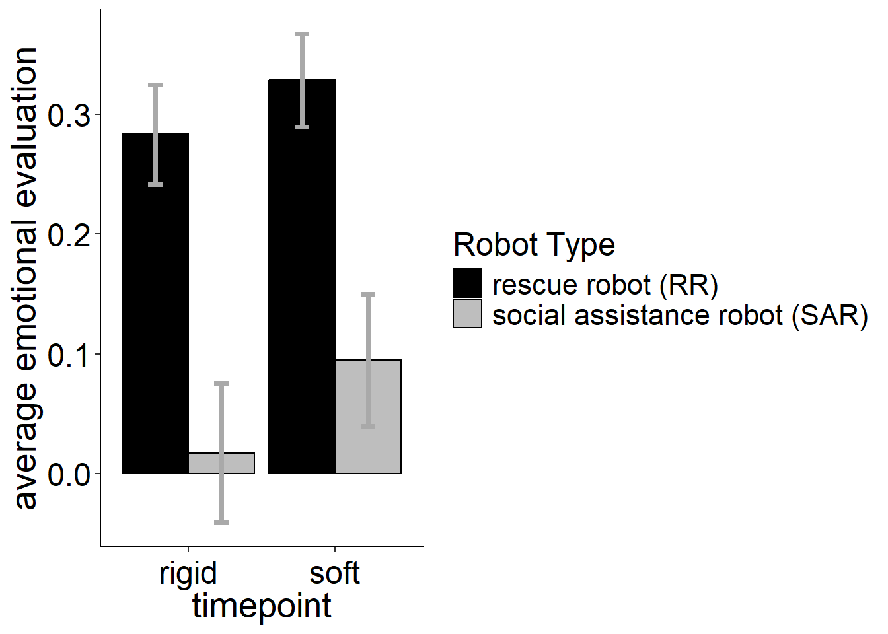
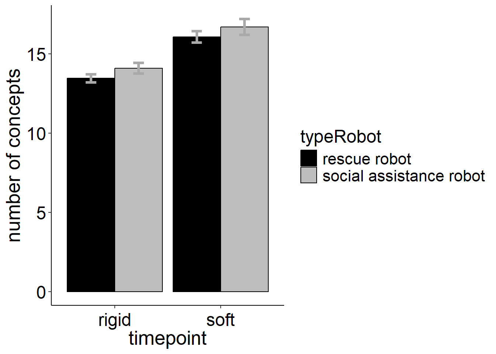
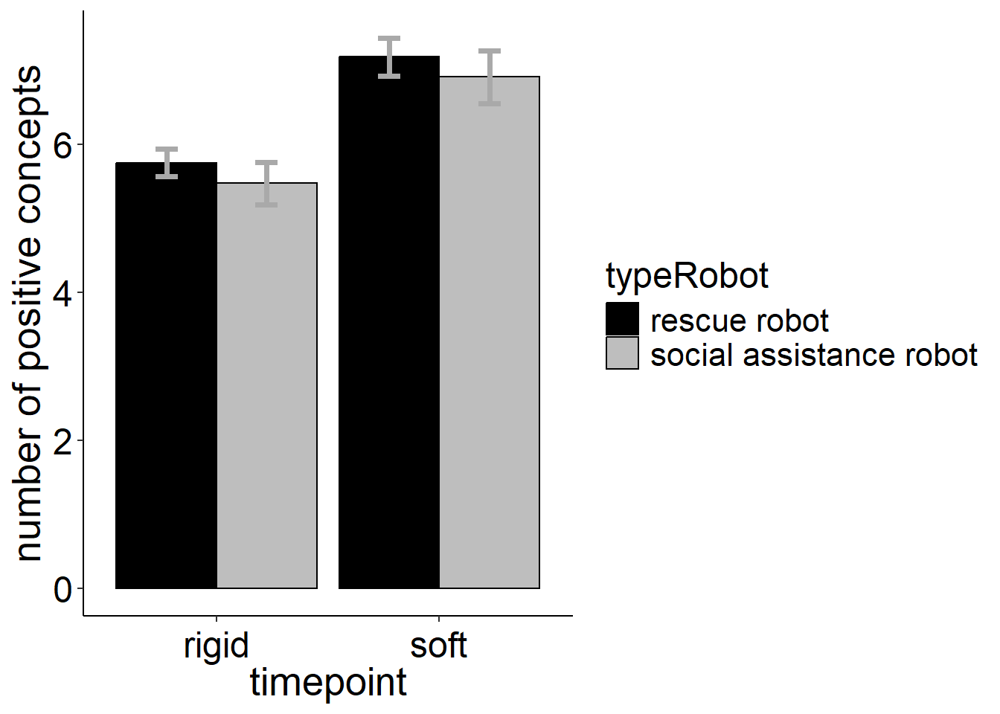
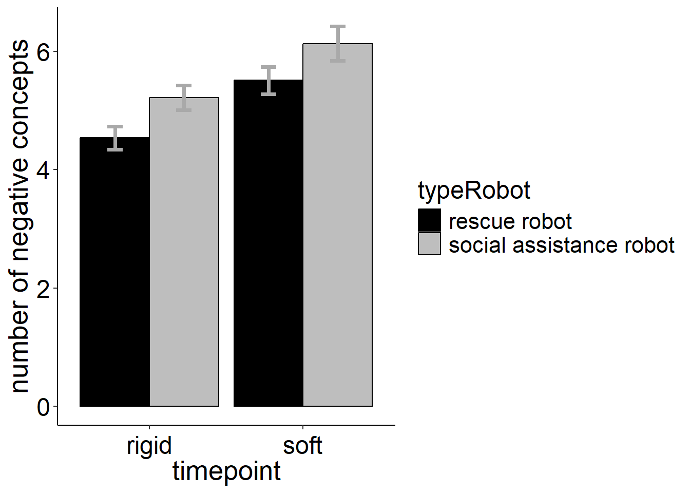
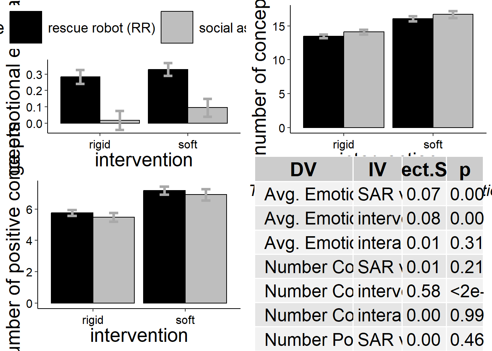

# sets the directory of location of this script as the current directory
# setwd(dirname(rstudioapi::getSourceEditorContext()$path))
### load packages
require(pacman)
p_load('tidyverse', 'jsonlite', 'magrittr', 'xlsx',
'stargazer', 'psych', 'jtools', 'DT', 'ggstatsplot',
'lavaan',
'regsem', 'MplusAutomation', 'igraph', 'openxlsx',
'reshape2')
setwd("outputs/01_dataPreperation/final")
### load questionnaire
questionnaire <- readRDS(file = "questionnaire_final.rds")
questionnaireCAMs <- readRDS(file = "questionnaireCAMs_final.rds")
### add type robot
questionnaire$choosen_Robot <- ifelse(test = questionnaire$choosen_Robot == "Rettungsroboter", yes = "rescue robot", no = "social assistance robot")
questionnaireCAMs$choosen_Robot <- ifelse(test = questionnaireCAMs$choosen_Robot == "Rettungsroboter", yes = "rescue robot", no = "social assistance robot")
networkIndicators_pre <- readRDS(file = "networkIndicators_pre_final.rds")
networkIndicators_post <- readRDS(file = "networkIndicators_post_final.rds")
# CAMfiles_combined <- readRDS(file = "CAMfiles_combined_final.rds")
CAMfiles_combined <- readRDS(file = "CAMfiles_combined_final_translated.rds")
CAMfiles_pre <- readRDS(file = "CAMfiles_pre_final.rds")
CAMfiles_post <- readRDS(file = "CAMfiles_post_final.rds")
### load functions
# print(getwd())
setwd("../../../../functions")
for(i in 1:length(dir())){
# print(dir()[i])
source(dir()[i], encoding = "utf-8")
}
setwd("../functions_CAMapp")
for(i in 1:length(dir())){
# print(dir()[i])
source(dir()[i], encoding = "utf-8")
}
rm(i)
### summary function
data_summary <- function(data, varname, groupnames){
require(plyr)
summary_func <- function(x, col){
c(mean = mean(x[[col]], na.rm=TRUE),
se = sd(x[[col]], na.rm=TRUE) / sqrt(length(x[[col]])))
}
data_sum<-ddply(data, groupnames, .fun=summary_func,
varname)
data_sum <- plyr::rename(data_sum, c("mean" = varname))
return(data_sum)
}Data analyses for S2 research questions
Notes
load cleaned data files
descriptives
table(questionnaireCAMs$typeChange)
A B C D
1 144 37 36 round(x = table(questionnaireCAMs$typeChange) / nrow(questionnaireCAMs) * 100, digits = 2)
A B C D
0.46 66.06 16.97 16.51 data preperation
only keep B, D
only keep B, D:
tmp_ids <- questionnaireCAMs$PROLIFIC_PID[questionnaireCAMs$typeChange %in% c("B", "D")]
networkIndicators_pre <- networkIndicators_pre[str_remove_all(string = networkIndicators_pre$participantCAM, pattern = "_pre$") %in% tmp_ids, ]
networkIndicators_post <- networkIndicators_post[str_remove_all(string = networkIndicators_post$participantCAM, pattern = "_post$") %in% tmp_ids, ]
questionnaire <- questionnaire[questionnaire$PROLIFIC_PID %in% tmp_ids, ]
questionnaireCAMs <- questionnaireCAMs[questionnaireCAMs$PROLIFIC_PID %in% tmp_ids, ]
CAMfiles_combined[[1]] <- CAMfiles_combined[[1]][CAMfiles_combined[[1]]$participantCAM %in% tmp_ids, ]
CAMfiles_combined[[2]] <- CAMfiles_combined[[2]][CAMfiles_combined[[2]]$participantCAM %in% tmp_ids, ]
CAMfiles_combined[[3]] <- CAMfiles_combined[[3]][CAMfiles_combined[[3]]$participantCAM.y %in% tmp_ids, ] add IDs to CAMfiles_combined
CAMfiles_combined[[1]]$participantCAM[CAMfiles_combined[[1]]$CAM %in% CAMfiles_pre[[1]]$CAM] <- paste0(CAMfiles_combined[[1]]$participantCAM[CAMfiles_combined[[1]]$CAM %in% CAMfiles_pre[[1]]$CAM], "_pre")
CAMfiles_combined[[1]]$participantCAM[CAMfiles_combined[[1]]$CAM %in% CAMfiles_post[[1]]$CAM] <- paste0(CAMfiles_combined[[1]]$participantCAM[CAMfiles_combined[[1]]$CAM %in% CAMfiles_post[[1]]$CAM], "_post")set up long data
# prepare data
### add pre post
networkIndicators_pre$timepoint <- "rigid"
networkIndicators_post$timepoint <- "soft"
### long data format
networkIndicators_long <- rbind(networkIndicators_pre, networkIndicators_post)
### ad ID
networkIndicators_long$ID <- c(1:(nrow(networkIndicators_long) / 2), 1:(nrow(networkIndicators_long) / 2))
### reformat variable
networkIndicators_long$timepoint <- factor(networkIndicators_long$timepoint,
levels = c("rigid", "soft"),
ordered = FALSE)
### add type robot
networkIndicators_long$typeRobot <- ifelse(test = !is.na(networkIndicators_long$valence_micro_Rettungsroboter), yes = "rescue robot", no = "social assistance robot")
table(networkIndicators_long$typeRobot)
rescue robot social assistance robot
196 164 table(questionnaireCAMs$choosen_Robot) * 2
rescue robot social assistance robot
196 164 describe sample
table(questionnaireCAMs$choosen_Robot)
rescue robot social assistance robot
98 82 # age for one person is missing
psych::describe(questionnaireCAMs[, c("socio_age")]) vars n mean sd median trimmed mad min max range skew kurtosis se
X1 1 179 30.21 8.92 29 28.91 7.41 18 67 49 1.71 3.53 0.67hist(questionnaireCAMs$socio_age)# sex:
table(questionnaireCAMs$socio_sex)
Female Male
63 117 round(x = table(questionnaireCAMs$socio_sex) / nrow(questionnaireCAMs) * 100, digits = 2) # 1 answer missing
Female Male
35 65 table(questionnaireCAMs$socio_student)
No Yes
92 72 table(questionnaireCAMs$socio_employment)
Due to start a new job within the next month
4
Full-Time
68
Not in paid work (e.g. homemaker', 'retired or disabled)
6
Other
16
Part-Time
49
Unemployed (and job seeking)
13 ## split by robot
psych::describe(socio_age ~ choosen_Robot, data = questionnaireCAMs)
Descriptive statistics by group
choosen_Robot: rescue robot
vars n mean sd median trimmed mad min max range skew kurtosis
socio_age 1 98 29.98 8.59 29 29 7.41 18 63 45 1.53 3.27
se
socio_age 0.87
------------------------------------------------------------
choosen_Robot: social assistance robot
vars n mean sd median trimmed mad min max range skew kurtosis
socio_age 1 81 30.49 9.35 28 28.85 5.93 18 67 49 1.83 3.46
se
socio_age 1.04t.test(socio_age ~ choosen_Robot, data = questionnaireCAMs)
Welch Two Sample t-test
data: socio_age by choosen_Robot
t = -0.37989, df = 164.58, p-value = 0.7045
alternative hypothesis: true difference in means between group rescue robot and group social assistance robot is not equal to 0
95 percent confidence interval:
-3.186993 2.158523
sample estimates:
mean in group rescue robot mean in group social assistance robot
29.97959 30.49383 table(questionnaireCAMs$socio_sex, questionnaireCAMs$choosen_Robot)
rescue robot social assistance robot
Female 38 25
Male 60 57chisq.test(questionnaireCAMs$socio_sex, questionnaireCAMs$choosen_Robot)
Pearson's Chi-squared test with Yates' continuity correction
data: questionnaireCAMs$socio_sex and questionnaireCAMs$choosen_Robot
X-squared = 1.0082, df = 1, p-value = 0.3153spent time on study
psych::describe(x = questionnaireCAMs$total_min_prolific) vars n mean sd median trimmed mad min max range skew kurtosis
X1 1 178 35.38 15.84 33.22 33.52 12.38 6.28 100.12 93.83 1.27 2.07
se
X1 1.19describe CAMs
network parameters:
psych::describe(x = networkIndicators_long[, c("mean_valence_macro", "num_nodes_macro", "num_nodes_pos_macro", "num_nodes_neg_macro", "num_nodes_neut_macro", "num_nodes_ambi_macro")]) vars n mean sd median trimmed mad min max range
mean_valence_macro 1 360 0.19 0.47 0.16 0.18 0.37 -2.29 1.56 3.84
num_nodes_macro 2 360 15.06 3.72 14.00 14.51 1.48 10.00 36.00 26.00
num_nodes_pos_macro 3 360 6.34 2.67 6.00 6.13 1.48 0.00 23.00 23.00
num_nodes_neg_macro 4 360 5.32 2.27 5.00 5.23 1.48 0.00 17.00 17.00
num_nodes_neut_macro 5 360 2.44 2.07 3.00 2.17 1.48 0.00 13.00 13.00
num_nodes_ambi_macro 6 360 0.95 1.05 1.00 0.78 1.48 0.00 5.00 5.00
skew kurtosis se
mean_valence_macro -0.39 3.72 0.02
num_nodes_macro 2.08 5.97 0.20
num_nodes_pos_macro 1.39 5.37 0.14
num_nodes_neg_macro 0.65 2.11 0.12
num_nodes_neut_macro 1.62 4.59 0.11
num_nodes_ambi_macro 1.33 1.90 0.06t.test(mean_valence_macro ~ typeRobot, data = networkIndicators_long)
Welch Two Sample t-test
data: mean_valence_macro by typeRobot
t = 5.0787, df = 303.33, p-value = 6.649e-07
alternative hypothesis: true difference in means between group rescue robot and group social assistance robot is not equal to 0
95 percent confidence interval:
0.1530332 0.3466399
sample estimates:
mean in group rescue robot mean in group social assistance robot
0.30582621 0.05598966 t.test(num_nodes_macro ~ typeRobot, data = networkIndicators_long)
Welch Two Sample t-test
data: num_nodes_macro by typeRobot
t = -1.5667, df = 315.82, p-value = 0.1182
alternative hypothesis: true difference in means between group rescue robot and group social assistance robot is not equal to 0
95 percent confidence interval:
-1.4119877 0.1601211
sample estimates:
mean in group rescue robot mean in group social assistance robot
14.77041 15.39634 psych::describe(x = questionnaireCAMs$feedCAM_repres) vars n mean sd median trimmed mad min max range skew kurtosis se
X1 1 180 6.04 0.91 6 6.15 1.48 2 7 5 -1.29 2.66 0.07spelling of terms:
length(CAMfiles_combined[[1]]$text)[1] 5420length(unique(CAMfiles_combined[[1]]$text))[1] 1902sort(table(CAMfiles_combined[[1]]$text), decreasing = TRUE)[1:10]
benefits risks rescue robot
360 360 196
social assistance robot costs abuse
164 69 39
dependency expensive discrimination
36 28 27
data protection
26 sum(CAMfiles_combined[[1]]$comment != "")[1] 1113tmp_comments <- sapply(strsplit(CAMfiles_combined[[1]]$comment, "\\s+"), function(x) length(x)) # by words
tmp_comments <- tmp_comments[tmp_comments != 0]
psych::describe(tmp_comments) vars n mean sd median trimmed mad min max range skew kurtosis se
X1 1 1113 11.85 7.33 11 11 7.41 1 63 62 1.49 4.09 0.22feedback to the study
Question: Do you have any feedback or criticism of the online study? (in German)
DT::datatable(questionnaireCAMs[,c("PROLIFIC_PID", "feedback_critic")], options = list(pageLength = 5)) ## save feedbacks to summarize via LLM
setwd("outputs/03_dataAnalysis_RQ")
write.table(x = questionnaireCAMs$feedback_critic[!is.na(nchar(questionnaireCAMs$feedback_critic))], file = "feedback_critic.txt", row.names = FALSE)technical problems CAMEL
DT::datatable(questionnaireCAMs[,c("PROLIFIC_PID", str_subset(string = colnames(questionnaireCAMs), pattern = "^feedCAM"))], options = list(pageLength = 5)) ## technical problems
table(questionnaireCAMs$feedCAM_technicalprobs)
0 1
172 8 questionnaireCAMs$feedCAM_technicalprobsText[questionnaireCAMs$feedCAM_technicalprobs == 1][1] "Ich bin nicht sicher, ob das Konzept erlutert wurde (oder ob man as aktiv steuern konnte), das die Verbindungen auch nur in eine bestimme Richtung zeigen konnten."
[2] "Ich konnte bei den Verbindungen nur die Hemmung oder Verstrkung regeln, nicht aber die Richtung"
[3] "In der Hilfe stand bei der Beschreibung der Beziehung stand noch, dass man die Richtung der Beeinflussung mithilfe der Pfeie darstellen knne, dies war aber nicht mglich"
[4] "Manchmal hat das Verschieben der einzelnen Konzepte nicht so gut funktioniert"
[5] "Das Anklicken der Kstchen, war etwas mhsam, da manchmal nicht die gewnschte Funktion ausgefhrt wurde (Kstchen wurden erstellt statt verschoben). Dies knnte aber natrlich auch an meinem PC liegen."
[6] "In der letzten Minute des Experiments habe ich den Bildschirm versehentlich aus dem Vollbildmodus entfernt."
[7] "Ich glaube es sollten drei bereits vorgegebene Konzepte da sein, diese waren bei mir allerdings nicht vorhanden."
[8] "Mein Computer ist whrend der Umfrage abgestrzt" hist(questionnaire$feedCAM_repres)psych::describe(x = questionnaire$feedCAM_repres) vars n mean sd median trimmed mad min max range skew kurtosis se
X1 1 180 6.04 0.91 6 6.15 1.48 2 7 5 -1.29 2.66 0.07R1: Perceived risks and benefits quantitative
average emotional evaluation
### post - pre difference of robot -> average valence
fit1 <- afex::aov_car(mean_valence_macro ~ timepoint*typeRobot + Error(ID / timepoint),
data = networkIndicators_long)Converting to factor: typeRobotContrasts set to contr.sum for the following variables: typeRobotfit1a <- afex::aov_ez(id = "ID", dv = "mean_valence_macro",
data = networkIndicators_long, between=c("typeRobot"), within=c("timepoint"))Converting to factor: typeRobot
Contrasts set to contr.sum for the following variables: typeRobot# partical eta squared
anova(fit1, es = "pes")Anova Table (Type 3 tests)
Response: mean_valence_macro
num Df den Df MSE F pes Pr(>F)
typeRobot 1 178 0.39061 14.2682 0.074210 0.0002159 ***
timepoint 1 178 0.02293 14.6831 0.076203 0.0001762 ***
typeRobot:timepoint 1 178 0.02293 1.0113 0.005649 0.3159610
---
Signif. codes: 0 '***' 0.001 '**' 0.01 '*' 0.05 '.' 0.1 ' ' 1# generalized eta squared
fit1a # > identical resultsAnova Table (Type 3 tests)
Response: mean_valence_macro
Effect df MSE F ges p.value
1 typeRobot 1, 178 0.39 14.27 *** .070 <.001
2 timepoint 1, 178 0.02 14.68 *** .005 <.001
3 typeRobot:timepoint 1, 178 0.02 1.01 <.001 .316
---
Signif. codes: 0 '***' 0.001 '**' 0.01 '*' 0.05 '+' 0.1 ' ' 1dfvalcor <- data_summary(networkIndicators_long, varname="mean_valence_macro",
groupnames=c("timepoint","typeRobot"))Lade ntiges Paket: plyrWarning: Paket 'plyr' wurde unter R Version 4.3.2 erstellt------------------------------------------------------------------------------You have loaded plyr after dplyr - this is likely to cause problems.
If you need functions from both plyr and dplyr, please load plyr first, then dplyr:
library(plyr); library(dplyr)------------------------------------------------------------------------------
Attache Paket: 'plyr'Die folgenden Objekte sind maskiert von 'package:dplyr':
arrange, count, desc, failwith, id, mutate, rename, summarise,
summarizeDas folgende Objekt ist maskiert 'package:purrr':
compactdfvalcor$timepoint <- factor(dfvalcor$timepoint, levels = c("rigid", "soft"))
p <- ggplot(dfvalcor, aes(x=timepoint, y=mean_valence_macro, fill=typeRobot)) +
geom_bar(stat="identity", color="black",
position=position_dodge()) +
geom_errorbar(aes(ymin=mean_valence_macro-se, ymax=mean_valence_macro+se), width=.2,
position=position_dodge(.9)) + ggplot_theme + ylab(label = "average emotional evaluation") +
theme(axis.title.x = element_text(size=20), axis.title.y = element_text(size=20), axis.text.x = element_text(size = 18), axis.text.y = element_text(size = 18), legend.text = element_text(size=16), legend.title = element_text(size=18))
print(p)
number of drawn concepts
overall
### post - pre difference of robot -> number of concepts
fit1 <- afex::aov_car(num_nodes_macro ~ timepoint*typeRobot + Error(ID / timepoint),
data = networkIndicators_long)Converting to factor: typeRobotContrasts set to contr.sum for the following variables: typeRobotfit1a <- afex::aov_ez(id = "ID", dv = "num_nodes_macro",
data = networkIndicators_long, between=c("typeRobot"), within=c("timepoint"))Converting to factor: typeRobot
Contrasts set to contr.sum for the following variables: typeRobot# partical eta squared
anova(fit1, es = "pes")Anova Table (Type 3 tests)
Response: num_nodes_macro
num Df den Df MSE F pes Pr(>F)
typeRobot 1 178 21.8759 1.5991 0.00890 0.2077
timepoint 1 178 2.4135 250.0540 0.58416 <2e-16 ***
typeRobot:timepoint 1 178 2.4135 0.0002 0.00000 0.9891
---
Signif. codes: 0 '***' 0.001 '**' 0.01 '*' 0.05 '.' 0.1 ' ' 1# generalized eta squared
fit1a # > identical resultsAnova Table (Type 3 tests)
Response: num_nodes_macro
Effect df MSE F ges p.value
1 typeRobot 1, 178 21.88 1.60 .008 .208
2 timepoint 1, 178 2.41 250.05 *** .122 <.001
3 typeRobot:timepoint 1, 178 2.41 0.00 <.001 .989
---
Signif. codes: 0 '***' 0.001 '**' 0.01 '*' 0.05 '+' 0.1 ' ' 1dfvalcor <- data_summary(networkIndicators_long, varname="num_nodes_macro",
groupnames=c("timepoint","typeRobot"))
dfvalcor$timepoint <- factor(dfvalcor$timepoint, levels = c("rigid", "soft"))
p <- ggplot(dfvalcor, aes(x=timepoint, y=num_nodes_macro, fill=typeRobot)) +
geom_bar(stat="identity", color="black",
position=position_dodge()) +
geom_errorbar(aes(ymin=num_nodes_macro-se, ymax=num_nodes_macro+se), width=.2,
position=position_dodge(.9)) + ggplot_theme + ylab(label = "number of concepts") +
theme(axis.title.x = element_text(size=20), axis.title.y = element_text(size=20), axis.text.x = element_text(size = 18), axis.text.y = element_text(size = 18), legend.text = element_text(size=16), legend.title = element_text(size=18))
print(p)
positive
### post - pre difference of robot -> number of concepts
fit1 <- afex::aov_car(num_nodes_pos_macro ~ timepoint*typeRobot + Error(ID / timepoint),
data = networkIndicators_long)Converting to factor: typeRobotContrasts set to contr.sum for the following variables: typeRobotfit1a <- afex::aov_ez(id = "ID", dv = "num_nodes_pos_macro",
data = networkIndicators_long, between=c("typeRobot"), within=c("timepoint"))Converting to factor: typeRobot
Contrasts set to contr.sum for the following variables: typeRobot# partical eta squared
anova(fit1, es = "pes")Anova Table (Type 3 tests)
Response: num_nodes_pos_macro
num Df den Df MSE F pes Pr(>F)
typeRobot 1 178 12.3740 0.5428 0.00304 0.4622
timepoint 1 178 0.9163 200.3299 0.52951 <2e-16 ***
typeRobot:timepoint 1 178 0.9163 0.0027 0.00001 0.9589
---
Signif. codes: 0 '***' 0.001 '**' 0.01 '*' 0.05 '.' 0.1 ' ' 1# generalized eta squared
fit1a # > identical resultsAnova Table (Type 3 tests)
Response: num_nodes_pos_macro
Effect df MSE F ges p.value
1 typeRobot 1, 178 12.37 0.54 .003 .462
2 timepoint 1, 178 0.92 200.33 *** .072 <.001
3 typeRobot:timepoint 1, 178 0.92 0.00 <.001 .959
---
Signif. codes: 0 '***' 0.001 '**' 0.01 '*' 0.05 '+' 0.1 ' ' 1dfvalcor <- data_summary(networkIndicators_long, varname="num_nodes_pos_macro",
groupnames=c("timepoint","typeRobot"))
dfvalcor$timepoint <- factor(dfvalcor$timepoint, levels = c("rigid", "soft"))
p <- ggplot(dfvalcor, aes(x=timepoint, y=num_nodes_pos_macro, fill=typeRobot)) +
geom_bar(stat="identity", color="black",
position=position_dodge()) +
geom_errorbar(aes(ymin=num_nodes_pos_macro-se, ymax=num_nodes_pos_macro+se), width=.2,
position=position_dodge(.9)) + ggplot_theme + ylab(label = "number of positive concepts") +
theme(axis.title.x = element_text(size=20), axis.title.y = element_text(size=20), axis.text.x = element_text(size = 18), axis.text.y = element_text(size = 18), legend.text = element_text(size=16), legend.title = element_text(size=18))
print(p)
negative
### post - pre difference of robot -> number of concepts
fit1 <- afex::aov_car(num_nodes_neg_macro ~ timepoint*typeRobot + Error(ID / timepoint),
data = networkIndicators_long)Converting to factor: typeRobotContrasts set to contr.sum for the following variables: typeRobotfit1a <- afex::aov_ez(id = "ID", dv = "num_nodes_neg_macro",
data = networkIndicators_long, between=c("typeRobot"), within=c("timepoint"))Converting to factor: typeRobot
Contrasts set to contr.sum for the following variables: typeRobot# partical eta squared
anova(fit1, es = "pes")Anova Table (Type 3 tests)
Response: num_nodes_neg_macro
num Df den Df MSE F pes Pr(>F)
typeRobot 1 178 8.8300 4.2897 0.02353 0.03979 *
timepoint 1 178 0.8689 91.1936 0.33877 < 2e-16 ***
typeRobot:timepoint 1 178 0.8689 0.0770 0.00043 0.78170
---
Signif. codes: 0 '***' 0.001 '**' 0.01 '*' 0.05 '.' 0.1 ' ' 1# generalized eta squared
fit1a # > identical resultsAnova Table (Type 3 tests)
Response: num_nodes_neg_macro
Effect df MSE F ges p.value
1 typeRobot 1, 178 8.83 4.29 * .021 .040
2 timepoint 1, 178 0.87 91.19 *** .044 <.001
3 typeRobot:timepoint 1, 178 0.87 0.08 <.001 .782
---
Signif. codes: 0 '***' 0.001 '**' 0.01 '*' 0.05 '+' 0.1 ' ' 1dfvalcor <- data_summary(networkIndicators_long, varname="num_nodes_neg_macro",
groupnames=c("timepoint","typeRobot"))
dfvalcor$timepoint <- factor(dfvalcor$timepoint, levels = c("rigid", "soft"))
p <- ggplot(dfvalcor, aes(x=timepoint, y=num_nodes_neg_macro, fill=typeRobot)) +
geom_bar(stat="identity", color="black",
position=position_dodge()) +
geom_errorbar(aes(ymin=num_nodes_neg_macro-se, ymax=num_nodes_neg_macro+se), width=.2,
position=position_dodge(.9)) + ggplot_theme + ylab(label = "number of negative concepts") +
theme(axis.title.x = element_text(size=20), axis.title.y = element_text(size=20), axis.text.x = element_text(size = 18), axis.text.y = element_text(size = 18), legend.text = element_text(size=16), legend.title = element_text(size=18))
print(p)
ambivalent
### post - pre difference of robot -> number of concepts
fit1 <- afex::aov_car(num_nodes_ambi_macro ~ timepoint*typeRobot + Error(ID / timepoint),
data = networkIndicators_long)Converting to factor: typeRobotContrasts set to contr.sum for the following variables: typeRobotfit1a <- afex::aov_ez(id = "ID", dv = "num_nodes_ambi_macro",
data = networkIndicators_long, between=c("typeRobot"), within=c("timepoint"))Converting to factor: typeRobot
Contrasts set to contr.sum for the following variables: typeRobot# partical eta squared
anova(fit1, es = "pes")Anova Table (Type 3 tests)
Response: num_nodes_ambi_macro
num Df den Df MSE F pes Pr(>F)
typeRobot 1 178 2.03747 0.2113 0.001186 0.6463130
timepoint 1 178 0.17444 15.3142 0.079219 0.0001294 ***
typeRobot:timepoint 1 178 0.17444 2.5752 0.014261 0.1103215
---
Signif. codes: 0 '***' 0.001 '**' 0.01 '*' 0.05 '.' 0.1 ' ' 1# generalized eta squared
fit1a # > identical resultsAnova Table (Type 3 tests)
Response: num_nodes_ambi_macro
Effect df MSE F ges p.value
1 typeRobot 1, 178 2.04 0.21 .001 .646
2 timepoint 1, 178 0.17 15.31 *** .007 <.001
3 typeRobot:timepoint 1, 178 0.17 2.58 .001 .110
---
Signif. codes: 0 '***' 0.001 '**' 0.01 '*' 0.05 '+' 0.1 ' ' 1dfvalcor <- data_summary(networkIndicators_long, varname="num_nodes_ambi_macro",
groupnames=c("timepoint","typeRobot"))
dfvalcor$timepoint <- factor(dfvalcor$timepoint, levels = c("rigid", "soft"))
p <- ggplot(dfvalcor, aes(x=timepoint, y=num_nodes_ambi_macro, fill=typeRobot)) +
geom_bar(stat="identity", color="black",
position=position_dodge()) +
geom_errorbar(aes(ymin=num_nodes_ambi_macro-se, ymax=num_nodes_ambi_macro+se), width=.2,
position=position_dodge(.9)) + ggplot_theme + ylab(label = "number of ambivalent concepts") +
theme(axis.title.x = element_text(size=20), axis.title.y = element_text(size=20), axis.text.x = element_text(size = 18), axis.text.y = element_text(size = 18), legend.text = element_text(size=16), legend.title = element_text(size=18))
print(p)additional analysis
networkIndicators_long_within <- networkIndicators_long
networkIndicators_long_within$participantCAM <- str_remove(string = networkIndicators_long_within$participantCAM, pattern = "_pre$|_post$")
# positive concepts
## parametric t-test
ggwithinstats(
data = networkIndicators_long_within,
x = timepoint,
y = num_nodes_pos_macro,
type = "p",
effsize.type = "d",
conf.level = 0.95,
title = "Parametric test"
)
# frequencies
## for positive concepts
tmp <- data.frame(post = networkIndicators_long_within$num_nodes_pos_macro[networkIndicators_long_within$timepoint == "rigid"], pre = networkIndicators_long_within$num_nodes_pos_macro[networkIndicators_long_within$timepoint == "soft"])
tmp$diff <- tmp$pre - tmp$post
tmp$diff_boolean <- tmp$diff == 0
psych::describe(tmp$diff) vars n mean sd median trimmed mad min max range skew kurtosis se
X1 1 180 1.43 1.35 1 1.29 1.48 -1 9 10 1.84 6.3 0.1sum(tmp$diff_boolean) / nrow(tmp)[1] 0.2055556# negative concepts
## parametric t-test
ggwithinstats(
data = networkIndicators_long_within,
x = timepoint,
y = num_nodes_neg_macro,
type = "p",
effsize.type = "d",
conf.level = 0.95,
title = "Parametric test"
)# frequencies
## for negative concepts
tmp <- data.frame(post = networkIndicators_long_within$num_nodes_neg_macro[networkIndicators_long_within$timepoint == "rigid"], pre = networkIndicators_long_within$num_nodes_neg_macro[networkIndicators_long_within$timepoint == "soft"])
tmp$diff <- tmp$pre - tmp$post
tmp$diff_boolean <- tmp$diff == 0
psych::describe(tmp$diff) vars n mean sd median trimmed mad min max range skew kurtosis se
X1 1 180 0.94 1.31 1 0.86 1.48 -5 8 13 0.59 5.94 0.1sum(tmp$diff_boolean) / nrow(tmp)[1] 0.3277778R2: Perceived risks and benefits qualitative
overall perspective
ids_participants <- str_remove_all(string = CAMfiles_combined[[1]]$participantCAM, pattern = "_pre$|_post$")
ids_participants <- unique(ids_participants)
## number of participants
length(ids_participants)[1] 180## get dummy variable for pre / post
CAMfiles_combined[[1]]$timepoint <- str_extract_all(string = CAMfiles_combined[[1]]$participantCAM, pattern = "pre$|post$", simplify = TRUE)
# reformat variable
CAMfiles_combined[[1]]$timepoint <- factor(CAMfiles_combined[[1]]$timepoint,
levels = c("pre", "post"),
ordered = FALSE)
## get categories
CAMfiles_combined[[1]]$category <- str_remove_all(string = CAMfiles_combined[[1]]$text_summarized, pattern = "_positive$|_negative$|_ambivalent$|_neutral$")
## get condition
CAMfiles_combined[[1]]$condition <- NA
CAMfiles_combined[[1]]$condition[str_remove_all(string = CAMfiles_combined[[1]]$participantCAM, pattern = "_pre$|_post$") %in% questionnaireCAMs$PROLIFIC_PID[questionnaireCAMs$choosen_Robot == "social assistance robot"]] <- "social assistance robot"
CAMfiles_combined[[1]]$condition[str_remove_all(string = CAMfiles_combined[[1]]$participantCAM, pattern = "_pre$|_post$") %in% questionnaireCAMs$PROLIFIC_PID[questionnaireCAMs$choosen_Robot == "rescue robot"]] <- "rescue robot"
ids_categories <- CAMfiles_combined[[1]]$category
ids_categories <- unique(ids_categories)
ids_categories <- ids_categories[!ids_categories %in% c("RR", "SAR", "benefits", "risks")]
## number of categories
length(ids_categories)[1] 18table(CAMfiles_combined[[1]]$category)
AN AP benefits HC HRIN HRIP LC MT
140 90 360 153 205 182 83 393
R RCA RCN RCPN RCPP risks RR SA
202 175 216 145 204 360 196 547
SAR SIN SIP T TL TP
164 339 350 187 229 500 table(CAMfiles_combined[[1]]$timepoint)
pre post
2476 2944 prepare data
allConcepts_pre <- CAMfiles_combined[[1]][str_detect(string = CAMfiles_combined[[1]]$participantCAM, pattern = "_pre$"), ]
allConcepts_post <- CAMfiles_combined[[1]][str_detect(string = CAMfiles_combined[[1]]$participantCAM, pattern = "_post$"), ]CAMs, which added many concepts
networkIndicators_post$diffConcepts <- networkIndicators_post$num_nodes_macro - networkIndicators_pre$num_nodes_macro
cbind(networkIndicators_post$diffConcepts[order(networkIndicators_post$diffConcepts, decreasing = TRUE)][1:12], networkIndicators_post$participantCAM[order(networkIndicators_post$diffConcepts, decreasing = TRUE)][1:12]) [,1] [,2]
[1,] "13" "655b4ea3ab2c763e739cb199_post"
[2,] "12" "6503144bcc000df7879d9637_post"
[3,] "11" "644ac0e41a2fabcf5d563f20_post"
[4,] "10" "5bbbdca68f3bd70001e713ef_post"
[5,] "9" "6427068bce4fc1aa335ad025_post"
[6,] "7" "651311510abdac9c5b9c6c4b_post"
[7,] "7" "5dea808cce8d8d19f5424b21_post"
[8,] "7" "65170d2924df1aca5e1b075b_post"
[9,] "6" "65216081309ddac9a26e5d3a_post"
[10,] "6" "65270eab7c3eeb6fda130ee8_post"
[11,] "6" "65674761184f5501367c963d_post"
[12,] "6" "60fe7985ba99343ad0b893b7_post"textPre <- CAMfiles_combined[[1]]$text[CAMfiles_combined[[1]]$participantCAM == "60fe7985ba99343ad0b893b7_pre"]
textPost <- CAMfiles_combined[[1]]$text[CAMfiles_combined[[1]]$participantCAM == "60fe7985ba99343ad0b893b7_post"]
textPost[!textPost %in% textPre][1] "no \"real\" contact" "soft robots" "low risk of injury"
[4] "animal protection" "risk of dependency" "risk of manipulation"
[7] "uncanny valley" textPre[!textPre %in% textPost][1] "No human contact"data preperation
split by category
only a first look, table is not sensitive if concept was deleted
table(CAMfiles_combined[[1]]$category, CAMfiles_combined[[1]]$timepoint)
pre post
AN 62 78
AP 33 57
benefits 180 180
HC 75 78
HRIN 88 117
HRIP 79 103
LC 40 43
MT 187 206
R 76 126
RCA 82 93
RCN 92 124
RCPN 62 83
RCPP 76 128
risks 180 180
RR 98 98
SA 244 303
SAR 82 82
SIN 164 175
SIP 169 181
T 89 98
TL 101 128
TP 217 283mat <- table(CAMfiles_combined[[1]]$category, CAMfiles_combined[[1]]$condition)
mat[,1] <- round(x = mat[,1] / sum(questionnaireCAMs$choosen_Robot == "rescue robot"), digits = 2)
mat[,2] <- round(x = mat[,2] / sum(questionnaireCAMs$choosen_Robot == "social assistance robot"), digits = 2)
mat
rescue robot social assistance robot
AN 0.59 1.00
AP 0.45 0.56
benefits 2.00 2.00
HC 0.92 0.77
HRIN 0.37 2.06
HRIP 0.13 2.06
LC 0.21 0.76
MT 3.07 1.12
R 1.60 0.55
RCA 0.99 0.95
RCN 1.13 1.28
RCPN 0.70 0.93
RCPP 1.08 1.20
risks 2.00 2.00
RR 2.00 0.00
SA 4.99 0.71
SAR 0.00 2.00
SIN 0.42 3.63
SIP 0.82 3.29
T 0.90 1.21
TL 1.71 0.74
TP 3.45 1.98split by category and participant
create data frames of concepts constant (C), deleted (D), new (N)
dat_pre_out <- data.frame()
dat_post_out <- data.frame()
for (i in 1:length(ids_participants)) {
tmp_pre <-
CAMfiles_combined[[1]][CAMfiles_combined[[1]]$participantCAM %in% paste0(ids_participants[i], "_pre"), ]
tmp_post <-
CAMfiles_combined[[1]][CAMfiles_combined[[1]]$participantCAM %in% paste0(ids_participants[i], "_post"), ]
## get date of concepts drawn by data collection tool (no interaction by user) - heuristic !!!:
date_tmp <- tmp_post$date[tmp_post$date - min(tmp_post$date) <= .5] # less than half a second
for (c in 1:length(ids_categories)) {
if (any(
c(
tmp_pre$category %in% ids_categories[c],
tmp_post$category %in% ids_categories[c]
)
)) {
## manually check if you could miss any words
if (length(table(tmp_pre$text[tmp_pre$category %in% ids_categories[c]])[table(tmp_pre$text[tmp_pre$category %in% ids_categories[c]]) >= 2]) >= 1) {
# cat("\npre data - multiple identical named concepts:\n", "in i:", i, ", c:", c, "\n")
}
if (length(table(tmp_post$text[tmp_post$category %in% ids_categories[c]])[table(tmp_post$text[tmp_post$category %in% ids_categories[c]]) >= 2]) >= 1) {
# cat("\npost data - multiple identical named concepts:\n", "in i:", i, ", c:", c, "\n")
}
dat_pre <-
tmp_pre[tmp_pre$category %in% ids_categories[c], c("participantCAM", "id" , "text", "value", "comment", "date", "x_pos", "y_pos", "category")]
dat_post <-
tmp_post[tmp_post$category %in% ids_categories[c], c("participantCAM", "id" , "text", "value", "comment", "date", "x_pos", "y_pos", "category")]
## set variables:
if(nrow(dat_pre) >= 1){
## indicate type of concept:
dat_pre$typeConcept <- NA
checkOldDeleted <- FALSE
}
if(nrow(dat_post) >= 1){
dat_post$originalConcept_date <- dat_post$date %in% date_tmp
## check if positions have changed - heuristic !!!:
dat_post$originalConcept_position <- FALSE
## indicate if position was changed
dat_post$changedPosition <- FALSE
## indicate if valence was changed
dat_post$changedValence <- FALSE
## indicate type of concept:
dat_post$typeConcept <- NA
checkNewAdded <- FALSE
}
## loop through if both data sets exists
if(nrow(dat_pre) >= 1 && nrow(dat_post) >= 1){
#> through dat_pre
for(p in 1:nrow(dat_pre)){
## check positon:
pos_tmp <- dat_pre[p,c("x_pos", "y_pos")]
matching_id <- dat_post[dat_post$x_pos == pos_tmp$x_pos & dat_post$y_pos == pos_tmp$y_pos, "id"]
dat_post$originalConcept_position[dat_post$id == matching_id] <- TRUE
## check valence
value_tmp <- dat_post$value[dat_post$text %in% dat_pre$text[p]]
if(length(value_tmp) != 0){
if(dat_pre$value[p] != value_tmp[1]){
dat_post$changedValence[dat_post$text %in% dat_pre$text[p]] <- TRUE
}
}
## indicate type of concept:
if(dat_pre$text[p] %in% dat_post$text){
dat_pre$typeConcept[p] <- "constant"
}else{
dat_pre$typeConcept[p] <- "deleted"
# cat("\n deleted concepts:\n", "in i:", i, ", c:", c, "p:", p, "\n")
checkOldDeleted <- TRUE
}
}
#> through dat_post
for(q in 1:nrow(dat_post)){
## indicate type of concept:
if(dat_post$text[q] %in% dat_pre$text){
dat_post$typeConcept[q] <- "constant"
}else{
dat_post$typeConcept[q] <- "new"
# cat("\n new concepts:\n", "in i:", i, ", c:", c, "p:", p, "\n")
checkNewAdded <- TRUE
}
## indicate if concept changed positon
if(dat_post$originalConcept_date[q] && !dat_post$originalConcept_position[q]){
dat_post$changedPosition[q] <- TRUE
}
}
if(all(checkOldDeleted, checkNewAdded)){
# cat("\n deleted concepts, new concepts:\n", "in i:", i, ", c:", c, "p:", p, "\n")
}
}
## indicate type of concept:
if(nrow(dat_post) == 0){
dat_pre$typeConcept <- "deleted"
}
if(nrow(dat_pre) == 0){
dat_post$typeConcept <- "new"
}
if(any(is.na(dat_post$typeConcept))){
cat("\n NA typeConcept:\n", "in i:", i, ", c:", c, "p:", p, "\n")
stop()
}
dat_pre_out <- rbind(dat_pre_out, dat_pre)
dat_post_out <- rbind(dat_post_out, dat_post)
}
}
}# check if I missed any typeConcept
sum(is.na(dat_pre_out$typeConcept))[1] 0sum(is.na(dat_post_out$typeConcept))[1] 0# check if any data set was multiple times added
sum(table(dat_pre_out$id) >= 2)[1] 0sum(table(dat_post_out$id) >= 2)[1] 0# number of entries
nrow(dat_pre_out)[1] 1936nrow(dat_post_out)[1] 2404# nrow(dat_post_out) - 535 + 68
# types
table(dat_pre_out$typeConcept)
constant deleted
1868 68 table(dat_post_out$typeConcept)
constant new
1869 535 table(dat_post_out$changedPosition)
FALSE TRUE
2091 313 table(dat_post_out$changedValence)
FALSE TRUE
2359 45 setwd("outputs/03_dataAnalysis_RQ")
xlsx::write.xlsx2(x = dat_pre_out, file = "concepts_conventional.xlsx")
xlsx::write.xlsx2(x = dat_post_out, file = "concepts_soft.xlsx")create data.frame of all words for ChatGPT
dat_pre_out$choosen_Robot <- NA
dat_post_out$choosen_Robot <- NA
## get IDs:
ids_SAR_pre <- questionnaireCAMs$participantCAMpre[questionnaireCAMs$choosen_Robot == "social assistance robot"]
ids_SAR_post <- questionnaireCAMs$participantCAMpost[questionnaireCAMs$choosen_Robot == "social assistance robot"]
ids_RR_pre <- questionnaireCAMs$participantCAMpre[questionnaireCAMs$choosen_Robot == "rescue robot"]
ids_RR_post <- questionnaireCAMs$participantCAMpost[questionnaireCAMs$choosen_Robot == "rescue robot"]
## fill in choosen_Robot variable:
dat_pre_out$choosen_Robot[dat_pre_out$participantCAM %in% c(ids_SAR_pre)] <- "social assistance robot"
dat_post_out$choosen_Robot[dat_post_out$participantCAM %in% c(ids_SAR_post)] <- "social assistance robot"
dat_pre_out$choosen_Robot[dat_pre_out$participantCAM %in% c(ids_RR_pre)] <- "rescue robot"
dat_post_out$choosen_Robot[dat_post_out$participantCAM %in% c(ids_RR_post)] <- "rescue robot"
sum(is.na(dat_pre_out$choosen_Robot))[1] 0sum(is.na(dat_post_out$choosen_Robot))[1] 0chooseRobot = "social assistance robot"
chooseRobot = "rescue robot"saveWordsByCategory <- function(chooseRobot) {
wb <- openxlsx::createWorkbook()
for (c in 1:length(ids_categories)) {
## pre data:
tmp_pre <-
dat_pre_out[dat_pre_out$category == ids_categories[c] &
dat_pre_out$choosen_Robot %in% chooseRobot,]
## post data:
tmp_post <-
dat_post_out[dat_post_out$category == ids_categories[c] &
dat_post_out$choosen_Robot %in% chooseRobot,]
## set up data.frame
tmp_numEntries <- max(c(nrow(tmp_pre), nrow(tmp_post)))
dat <- data.frame(
constant = rep(x = NA, each = tmp_numEntries),
constant_comments = rep(x = NA, each = tmp_numEntries),
deleted = rep(x = NA, each = tmp_numEntries),
deleted_comments = rep(x = NA, each = tmp_numEntries),
new = rep(x = NA, each = tmp_numEntries),
new_comments = rep(x = NA, each = tmp_numEntries)
)
## constant:
tmp <- tmp_pre$text[tmp_pre$typeConcept == "constant"]
dat$constant <-
c(tmp, rep(x = NA, each = (nrow(dat) - length(tmp))))
tmp <- tmp_pre$comment[tmp_pre$typeConcept == "constant"]
dat$constant_comments <-
c(tmp, rep(x = NA, each = (nrow(dat) - length(tmp))))
dat$rigid_comments <-
c(tmp_pre$comment, rep(x = NA, each = (nrow(dat) - nrow(tmp_pre))))
## deleted:
tmp <- tmp_pre$text[tmp_pre$typeConcept == "deleted"]
dat$deleted <-
c(tmp, rep(x = NA, each = (nrow(dat) - length(tmp))))
tmp <- tmp_pre$comment[tmp_pre$typeConcept == "deleted"]
dat$deleted_comments <-
c(tmp, rep(x = NA, each = (nrow(dat) - length(tmp))))
## new:
tmp <- tmp_post$text[tmp_post$typeConcept == "new"]
dat$new <- c(tmp, rep(x = NA, each = (nrow(dat) - length(tmp))))
tmp <- tmp_post$comment[tmp_post$typeConcept == "new"]
dat$new_comments <-
c(tmp, rep(x = NA, each = (nrow(dat) - length(tmp))))
## add worksheet
addWorksheet(wb, ids_categories[c])
writeData(wb, ids_categories[c], dat)
}
# Save the workbook
saveWorkbook(wb, paste0(paste0(chooseRobot, collapse = "_"), "_multipleSheets_new.xlsx"), overwrite = TRUE)
return("Saved")
}setwd("outputs/03_dataAnalysis_RQ")
saveWordsByCategory(chooseRobot = c("rescue robot", "social assistance robot"))[1] "Saved"saveWordsByCategory(chooseRobot = c("rescue robot"))[1] "Saved"saveWordsByCategory(chooseRobot = c("social assistance robot"))[1] "Saved"data analysis
describe lists
overall:
## constant (not deleted or added), deleted
table(dat_pre_out$typeConcept)
constant deleted
1868 68 ## constant, new
table(dat_post_out$typeConcept)
constant new
1869 535 get descriptive tables for each type of robot
separately for categories:
### args:
# chooseRobot = "rescue robot"
# numParticipants = sum(questionnaire$choosen_Robot == "rescue robot")
getDescriptiveTable <- function(chooseRobot, numParticipants) {
dat <-
data.frame(
category = ids_categories,
NCAMs = NA,
PerCAMs = NA,
Nconstant = NA,
Ndeleted = NA,
Nnew = NA,
Mconstant = NA,
Mdeleted = NA,
Mnew = NA
)
for (c in 1:length(ids_categories)) {
## pre data:
tmp_pre <-
dat_pre_out[dat_pre_out$category == ids_categories[c] &
dat_pre_out$choosen_Robot %in% chooseRobot, ]
## post data:
tmp_post <-
dat_post_out[dat_post_out$category == ids_categories[c] &
dat_post_out$choosen_Robot %in% chooseRobot, ]
#> ambivalent ratings (10) to 0
tmp_pre$value <-
ifelse(test = tmp_pre$value == 10,
yes = 0,
no = tmp_pre$value)
tmp_post$value <-
ifelse(test = tmp_post$value == 10,
yes = 0,
no = tmp_post$value)
## numbers:
#> number of CAMs
tmp_CAMs <- c(tmp_pre$participantCAM, tmp_post$participantCAM)
dat$NCAMs[c] <-
length(unique(tmp_CAMs)) # number CAMs involved in this category
dat$PerCAMs[c] <-
round(x = length(unique(tmp_CAMs)) / numParticipants * 100,
digits = 2) # percentage (divided by total number of choosen robot)
#> number of constant terms
dat$Nconstant[c] <-
round(
x = sum(tmp_pre$typeConcept == "constant") / length(unique(tmp_CAMs)) * 1,
digits = 2
)
#> number of deleted terms
dat$Ndeleted[c] <-
round(
x = sum(tmp_pre$typeConcept == "deleted") / length(unique(tmp_CAMs)) * 1,
digits = 2
)
#> number of constant terms
dat$Nnew[c] <-
round(
x = sum(tmp_post$typeConcept == "new") / length(unique(tmp_CAMs)) * 1,
digits = 2
)
## means:
#> mean of constant terms
dat$Mconstant[c] <-
mean(tmp_pre$value[tmp_pre$typeConcept == "constant"])
#> mean of constant terms
dat$Mdeleted[c] <-
mean(tmp_pre$value[tmp_pre$typeConcept == "deleted"])
#> mean of constant terms
dat$Mnew[c] <-
mean(tmp_post$value[tmp_post$typeConcept == "new"])
}
colnames(dat) <-
c(
"category",
"numCAMs",
"perCAMs",
"avgConstant",
"avgOld",
"avgNew",
"Mconstant",
"Mold",
"Mnew"
)
dat$Mconstant <- round(x = dat$Mconstant, digits = 2)
dat$Mold <- round(x = dat$Mold, digits = 2)
dat$Mnew <- round(x = dat$Mnew, digits = 2)
return(dat)
}## for rescue robot
num <- sum(questionnaire$choosen_Robot == "rescue robot")
tmp_RR <- getDescriptiveTable(chooseRobot = "rescue robot", numParticipants = num)
DT::datatable(data = tmp_RR)## for social assistance robot
num <- sum(questionnaire$choosen_Robot == "social assistance robot")
tmp_SAR <- getDescriptiveTable(chooseRobot = "social assistance robot", numParticipants = num)
DT::datatable(data = tmp_SAR)save as HTML:
setwd("outputs/03_dataAnalysis_RQ")
stargazer(tmp_RR, type = "html", out = "rescue robot_table.html", summary = FALSE)
<table style="text-align:center"><tr><td colspan="10" style="border-bottom: 1px solid black"></td></tr><tr><td style="text-align:left"></td><td>category</td><td>numCAMs</td><td>perCAMs</td><td>avgConstant</td><td>avgOld</td><td>avgNew</td><td>Mconstant</td><td>Mold</td><td>Mnew</td></tr>
<tr><td colspan="10" style="border-bottom: 1px solid black"></td></tr><tr><td style="text-align:left">1</td><td>RCPP</td><td>73</td><td>74.490</td><td>0.510</td><td>0.050</td><td>0.380</td><td>1.950</td><td>1.500</td><td>1.960</td></tr>
<tr><td style="text-align:left">2</td><td>LC</td><td>17</td><td>17.350</td><td>0.590</td><td>0</td><td>0.060</td><td>1</td><td></td><td>1</td></tr>
<tr><td style="text-align:left">3</td><td>T</td><td>73</td><td>74.490</td><td>0.560</td><td>0</td><td>0.080</td><td>2</td><td></td><td>1.670</td></tr>
<tr><td style="text-align:left">4</td><td>SIP</td><td>63</td><td>64.290</td><td>0.590</td><td>0.020</td><td>0.080</td><td>2.220</td><td>3</td><td>2.400</td></tr>
<tr><td style="text-align:left">5</td><td>HRIP</td><td>13</td><td>13.270</td><td>0.310</td><td>0</td><td>0.380</td><td>2.750</td><td></td><td>1.800</td></tr>
<tr><td style="text-align:left">6</td><td>AN</td><td>49</td><td>50</td><td>0.530</td><td>0.020</td><td>0.100</td><td>-2.230</td><td>-2</td><td>-1.400</td></tr>
<tr><td style="text-align:left">7</td><td>SIN</td><td>33</td><td>33.670</td><td>0.610</td><td>0</td><td>0.030</td><td>-1.750</td><td></td><td>-1</td></tr>
<tr><td style="text-align:left">8</td><td>R</td><td>102</td><td>104.080</td><td>0.560</td><td>0.010</td><td>0.410</td><td>-2.140</td><td>-3</td><td>-1.620</td></tr>
<tr><td style="text-align:left">9</td><td>HC</td><td>79</td><td>80.610</td><td>0.530</td><td>0.030</td><td>0.050</td><td>-1.600</td><td>-1</td><td>-1</td></tr>
<tr><td style="text-align:left">10</td><td>RCN</td><td>65</td><td>66.330</td><td>0.660</td><td>0.050</td><td>0.340</td><td>-0.120</td><td>0</td><td>-0.270</td></tr>
<tr><td style="text-align:left">11</td><td>SA</td><td>183</td><td>186.730</td><td>1.210</td><td>0.030</td><td>0.220</td><td>2.340</td><td>2.200</td><td>2.300</td></tr>
<tr><td style="text-align:left">12</td><td>TP</td><td>161</td><td>164.290</td><td>0.840</td><td>0.020</td><td>0.390</td><td>2.200</td><td>2</td><td>2.270</td></tr>
<tr><td style="text-align:left">13</td><td>TL</td><td>109</td><td>111.220</td><td>0.610</td><td>0.040</td><td>0.280</td><td>-1.820</td><td>-2</td><td>-1.730</td></tr>
<tr><td style="text-align:left">14</td><td>RCPN</td><td>63</td><td>64.290</td><td>0.440</td><td>0.020</td><td>0.190</td><td>-1.640</td><td>-1</td><td>-2</td></tr>
<tr><td style="text-align:left">15</td><td>HRIN</td><td>33</td><td>33.670</td><td>0.520</td><td>0</td><td>0.060</td><td>-2.180</td><td></td><td>-2</td></tr>
<tr><td style="text-align:left">16</td><td>MT</td><td>163</td><td>166.330</td><td>0.870</td><td>0.040</td><td>0.080</td><td>-2.130</td><td>-1.830</td><td>-1.770</td></tr>
<tr><td style="text-align:left">17</td><td>RCA</td><td>77</td><td>78.570</td><td>0.520</td><td>0.100</td><td>0.120</td><td>-0.200</td><td>0</td><td>0</td></tr>
<tr><td style="text-align:left">18</td><td>AP</td><td>37</td><td>37.760</td><td>0.510</td><td>0</td><td>0.160</td><td>1.320</td><td></td><td>1.670</td></tr>
<tr><td colspan="10" style="border-bottom: 1px solid black"></td></tr></table>stargazer(tmp_SAR, type = "html", out = "social assistance robot_table.html", summary = FALSE)
<table style="text-align:center"><tr><td colspan="10" style="border-bottom: 1px solid black"></td></tr><tr><td style="text-align:left"></td><td>category</td><td>numCAMs</td><td>perCAMs</td><td>avgConstant</td><td>avgOld</td><td>avgNew</td><td>Mconstant</td><td>Mold</td><td>Mnew</td></tr>
<tr><td colspan="10" style="border-bottom: 1px solid black"></td></tr><tr><td style="text-align:left">1</td><td>RCPP</td><td>71</td><td>86.590</td><td>0.440</td><td>0.060</td><td>0.450</td><td>2.030</td><td>2</td><td>2.030</td></tr>
<tr><td style="text-align:left">2</td><td>LC</td><td>57</td><td>69.510</td><td>0.530</td><td>0</td><td>0.040</td><td>1.700</td><td></td><td>1.500</td></tr>
<tr><td style="text-align:left">3</td><td>T</td><td>73</td><td>89.020</td><td>0.640</td><td>0.010</td><td>0.050</td><td>1.940</td><td>2</td><td>1.750</td></tr>
<tr><td style="text-align:left">4</td><td>SIP</td><td>128</td><td>156.100</td><td>1.010</td><td>0.020</td><td>0.080</td><td>1.910</td><td>1</td><td>2.100</td></tr>
<tr><td style="text-align:left">5</td><td>HRIP</td><td>105</td><td>128.050</td><td>0.690</td><td>0.030</td><td>0.210</td><td>1.920</td><td>1.330</td><td>2</td></tr>
<tr><td style="text-align:left">6</td><td>AN</td><td>69</td><td>84.150</td><td>0.490</td><td>0.010</td><td>0.190</td><td>-1.880</td><td>-3</td><td>-1.770</td></tr>
<tr><td style="text-align:left">7</td><td>SIN</td><td>149</td><td>181.710</td><td>0.950</td><td>0.020</td><td>0.090</td><td>-2.040</td><td>-2.330</td><td>-1.770</td></tr>
<tr><td style="text-align:left">8</td><td>R</td><td>41</td><td>50</td><td>0.390</td><td>0.050</td><td>0.270</td><td>-1.880</td><td>-2</td><td>-2</td></tr>
<tr><td style="text-align:left">9</td><td>HC</td><td>59</td><td>71.950</td><td>0.530</td><td>0</td><td>0.020</td><td>-1.710</td><td></td><td>-1</td></tr>
<tr><td style="text-align:left">10</td><td>RCN</td><td>63</td><td>76.830</td><td>0.700</td><td>0.030</td><td>0.220</td><td>-0.230</td><td>0</td><td>-0.210</td></tr>
<tr><td style="text-align:left">11</td><td>SA</td><td>46</td><td>56.100</td><td>0.350</td><td>0.020</td><td>0.540</td><td>2.060</td><td>2</td><td>1.840</td></tr>
<tr><td style="text-align:left">12</td><td>TP</td><td>89</td><td>108.540</td><td>0.870</td><td>0.010</td><td>0.080</td><td>1.880</td><td>2</td><td>1.570</td></tr>
<tr><td style="text-align:left">13</td><td>TL</td><td>52</td><td>63.410</td><td>0.560</td><td>0.020</td><td>0.040</td><td>-1.590</td><td>-3</td><td>0.500</td></tr>
<tr><td style="text-align:left">14</td><td>RCPN</td><td>58</td><td>70.730</td><td>0.530</td><td>0.030</td><td>0.210</td><td>-1.810</td><td>-1.500</td><td>-1.580</td></tr>
<tr><td style="text-align:left">15</td><td>HRIN</td><td>116</td><td>141.460</td><td>0.570</td><td>0.040</td><td>0.280</td><td>-1.970</td><td>-1.200</td><td>-1.310</td></tr>
<tr><td style="text-align:left">16</td><td>MT</td><td>73</td><td>89.020</td><td>0.530</td><td>0.010</td><td>0.180</td><td>-2.210</td><td>-1</td><td>-1.920</td></tr>
<tr><td style="text-align:left">17</td><td>RCA</td><td>69</td><td>84.150</td><td>0.490</td><td>0</td><td>0.140</td><td>-0.500</td><td></td><td>-0.200</td></tr>
<tr><td style="text-align:left">18</td><td>AP</td><td>35</td><td>42.680</td><td>0.400</td><td>0</td><td>0.510</td><td>1.710</td><td></td><td>1.670</td></tr>
<tr><td colspan="10" style="border-bottom: 1px solid black"></td></tr></table>Graphic 1 (quantitative)
# Data for r1
data_r1 <- tmp_RR[!tmp_RR$category %in% c("RCPP", "RCPN", "RCN", "RCA"), c("category", "avgConstant", "avgNew")]
data_r1$group = "RR"
colnames(data_r1)[c(2,3)] <- c("constant", "new")
# Data for r2
data_r2 <- tmp_SAR[!tmp_SAR$category %in% c("RCPP", "RCPN", "RCN", "RCA"), c("category", "avgConstant", "avgNew")]
data_r2$group = "SAR"
colnames(data_r2)[c(2,3)] <- c("constant", "new")
# Combine the data
data_combined <- rbind(data_r1, data_r2)
data_combined <- data_combined[data_combined$category %in% unique(c(data_r1$category[order(data_r1$new, decreasing = TRUE)][1:5], data_r2$category[order(data_r2$new, decreasing = TRUE)][1:5])),]
# Reshape the data to long format for ggplot
data_long <- melt(data_combined, id.vars = c("category", "group"),
variable.name = "type", value.name = "value")
# Create a new column to distinguish between the groups and types for coloring
data_long$group_type <- interaction(data_long$group, data_long$type)
# rename group_type
levels(data_long$group_type) <- c("RR (constant)", "SAR (constant)", "RR (new)", "SAR (new)")
# Create the grouped barplot
ggplot(data_long, aes(x = category, y = value, fill = group_type)) +
geom_bar(stat = "identity", position = position_dodge(width = 0.7), width = 0.9) +
geom_text(aes(label = value, y = value + 0.02),
position = position_dodge(width = 0.7), vjust = 0, hjust = .2) +
coord_flip() +
labs(title = "Grouped Barplot of constant and new terms of robots for single categories",
x = "Category",
y = "Average number of drawn concepts per participant",
fill = "Robot (type)") +
theme_minimal() +
scale_fill_manual(values = c("RR (constant)" = "darkblue", "SAR (constant)" = "lightblue",
"RR (new)" = "darkgreen", "SAR (new)" = "lightgreen")) +
theme(legend.position = "top",
axis.title.x = element_text(size = 12),
axis.title.y = element_text(size = 12))R3: Perceived risks and benefits mediated by gender and age
blub
ADDITIONAL ANALYSES
check single scales and compute mean variables
Almere
Anxiety dimension
regEx <- "^Almere.*anx$"
nameScale <- "Almere - Anxiety"
nameVariable <- "mean_AlmereAnxiety"
### number of items
sum(str_detect(string = colnames(questionnaireCAMs), pattern = regEx))[1] 4### get correlation plot, descriptives, EFA, CFA
### EFA
tmp <- CFAstats(dataset = questionnaireCAMs, regularExp = regEx, labelLatent = str_remove(string = nameVariable, pattern = "mean_"),
showPlots = TRUE,
computeEFA = TRUE,
computeCFA = TRUE,
computeCFAMplus = FALSE)

descriptive statistics:
Mean SD Median CoeffofVariation Minimum Maximun Lower Quantile
Almere-3anx 2.09 1.05 2 0.50 1 5 1
Almere-1anx 2.72 1.22 3 0.45 1 5 1
Almere-4anx 2.18 0.98 2 0.45 1 5 1
Almere-2anx 2.67 1.27 2 0.47 1 5 1
Upper Quantile Skewness Kurtosis(-3) KS-Test
Almere-3anx 5 0.73 -0.30 0
Almere-1anx 5 0.07 -1.25 0
Almere-4anx 5 0.56 -0.49 0
Almere-2anx 5 0.15 -1.25 0
variables under investigation: Almere3anx Almere1anx Almere4anx Almere2anx
Cronbachs Alpha: 0.76 Error in if (any(lower > upper)) stop("lower>upper integration limits") :
Fehlender Wert, wo TRUE/FALSE ntig ist
[1] "use instead of polychoric correlations pearson correlations"
Parallel analysis suggests that the number of factors = 2 and the number of components = 2
AlmereAnxiety
Number of components: 2
KMO criteria is to low (< .6) for:
Almere1anx Almere4anx Almere2anx
mean KMO: 0.59
EFA factor loadings (1 factor solution):
Loadings:
MR1
Almere3anx 0.652
Almere1anx 0.773
Almere4anx 0.666
Almere2anx 0.744
MR1
SS loadings 2.020
Proportion Var 0.505
CFA summary and fit statistics:
lavaan 0.6.17 ended normally after 21 iterations
Estimator ML
Optimization method NLMINB
Number of model parameters 8
Number of observations 180
Model Test User Model:
Standard Scaled
Test Statistic 144.852 147.878
Degrees of freedom 2 2
P-value (Chi-square) 0.000 0.000
Scaling correction factor 0.980
Yuan-Bentler correction (Mplus variant)
Model Test Baseline Model:
Test statistic 309.405 191.445
Degrees of freedom 6 6
P-value 0.000 0.000
Scaling correction factor 1.616
User Model versus Baseline Model:
Comparative Fit Index (CFI) 0.529 0.213
Tucker-Lewis Index (TLI) -0.412 -1.360
Robust Comparative Fit Index (CFI) 0.523
Robust Tucker-Lewis Index (TLI) -0.430
Loglikelihood and Information Criteria:
Loglikelihood user model (H0) -1020.210 -1020.210
Scaling correction factor 1.261
for the MLR correction
Loglikelihood unrestricted model (H1) -947.784 -947.784
Scaling correction factor 1.205
for the MLR correction
Akaike (AIC) 2056.421 2056.421
Bayesian (BIC) 2081.964 2081.964
Sample-size adjusted Bayesian (SABIC) 2056.628 2056.628
Root Mean Square Error of Approximation:
RMSEA 0.630 0.637
90 Percent confidence interval - lower 0.545 0.551
90 Percent confidence interval - upper 0.719 0.727
P-value H_0: RMSEA <= 0.050 0.000 0.000
P-value H_0: RMSEA >= 0.080 1.000 1.000
Robust RMSEA 0.630
90 Percent confidence interval - lower 0.546
90 Percent confidence interval - upper 0.718
P-value H_0: Robust RMSEA <= 0.050 0.000
P-value H_0: Robust RMSEA >= 0.080 1.000
Standardized Root Mean Square Residual:
SRMR 0.187 0.187
Parameter Estimates:
Standard errors Sandwich
Information bread Observed
Observed information based on Hessian
Latent Variables:
Estimate Std.Err z-value P(>|z|) Std.lv Std.all
AlmereAnxiety =~
Almere3anx 1.000 0.831 0.795
Almere1anx 0.686 0.225 3.051 0.002 0.570 0.470
Almere4anx 0.960 0.087 11.046 0.000 0.798 0.815
Almere2anx 0.687 0.238 2.886 0.004 0.570 0.451
Variances:
Estimate Std.Err z-value P(>|z|) Std.lv Std.all
.Almere3anx 0.402 0.117 3.424 0.001 0.402 0.368
.Almere1anx 1.144 0.172 6.660 0.000 1.144 0.779
.Almere4anx 0.321 0.094 3.415 0.001 0.321 0.336
.Almere2anx 1.273 0.188 6.758 0.000 1.273 0.796
AlmereAnxiety 0.691 0.136 5.064 0.000 1.000 1.000
CFA first 6 Modification Indices:
lhs op rhs mi epc sepc.lv sepc.all sepc.nox
11 Almere3anx ~~ Almere4anx 110.820 2.084 2.084 5.804 5.804
14 Almere1anx ~~ Almere2anx 110.820 1.023 1.023 0.848 0.848
15 Almere4anx ~~ Almere2anx 14.944 -0.351 -0.351 -0.549 -0.549
10 Almere3anx ~~ Almere1anx 14.944 -0.366 -0.366 -0.539 -0.539
13 Almere1anx ~~ Almere4anx 10.025 -0.288 -0.288 -0.474 -0.474
12 Almere3anx ~~ Almere2anx 10.025 -0.300 -0.300 -0.419 -0.419### variable mean
questionnaireCAMs[[nameVariable]] <- questionnaireCAMs %>%
select(matches(regEx)) %>%
rowMeans(na.rm = TRUE)Attitude dimension
regEx <- "^Almere.*att$"
nameScale <- "Almere - Attitude"
nameVariable <- "mean_AlmereAttitude"
### number of items
sum(str_detect(string = colnames(questionnaireCAMs), pattern = regEx))[1] 3### get correlation plot, descriptives, EFA, CFA
### EFA
tmp <- CFAstats(dataset = questionnaireCAMs, regularExp = regEx, labelLatent = str_remove(string = nameVariable, pattern = "mean_"),
showPlots = TRUE,
computeEFA = TRUE,
computeCFA = TRUE,
computeCFAMplus = FALSE)

descriptive statistics:
Mean SD Median CoeffofVariation Minimum Maximun Lower Quantile
Almere-1att 4.07 0.74 4 0.18 1 5 1
Almere-3att 4.38 0.70 4 0.16 1 5 1
Almere-2att 3.74 0.91 4 0.24 1 5 1
Upper Quantile Skewness Kurtosis(-3) KS-Test
Almere-1att 5 -0.69 1.13 0
Almere-3att 5 -1.26 2.73 0
Almere-2att 5 -0.72 0.36 0
variables under investigation: Almere1att Almere3att Almere2att
Cronbachs Alpha: 0.71 
Parallel analysis suggests that the number of factors = 1 and the number of components = 1
AlmereAttitude
Number of components: 1 KMO criteria is to low (< .6) for:
Almere1att
mean KMO: 0.61
EFA factor loadings (1 factor solution):
Loadings:
MR1
Almere1att 0.998
Almere3att 0.655
Almere2att 0.548
MR1
SS loadings 1.724
Proportion Var 0.575
CFA summary and fit statistics:
lavaan 0.6.17 ended normally after 20 iterations
Estimator ML
Optimization method NLMINB
Number of model parameters 6
Number of observations 180
Model Test User Model:
Standard Scaled
Test Statistic 0.000 0.000
Degrees of freedom 0 0
Model Test Baseline Model:
Test statistic 112.038 108.365
Degrees of freedom 3 3
P-value 0.000 0.000
Scaling correction factor 1.034
User Model versus Baseline Model:
Comparative Fit Index (CFI) 1.000 1.000
Tucker-Lewis Index (TLI) 1.000 1.000
Robust Comparative Fit Index (CFI) NA
Robust Tucker-Lewis Index (TLI) NA
Loglikelihood and Information Criteria:
Loglikelihood user model (H0) -573.194 -573.194
Loglikelihood unrestricted model (H1) -573.194 -573.194
Akaike (AIC) 1158.389 1158.389
Bayesian (BIC) 1177.546 1177.546
Sample-size adjusted Bayesian (SABIC) 1158.544 1158.544
Root Mean Square Error of Approximation:
RMSEA 0.000 NA
90 Percent confidence interval - lower 0.000 NA
90 Percent confidence interval - upper 0.000 NA
P-value H_0: RMSEA <= 0.050 NA NA
P-value H_0: RMSEA >= 0.080 NA NA
Robust RMSEA 0.000
90 Percent confidence interval - lower 0.000
90 Percent confidence interval - upper 0.000
P-value H_0: Robust RMSEA <= 0.050 NA
P-value H_0: Robust RMSEA >= 0.080 NA
Standardized Root Mean Square Residual:
SRMR 0.000 0.000
Parameter Estimates:
Standard errors Sandwich
Information bread Observed
Observed information based on Hessian
Latent Variables:
Estimate Std.Err z-value P(>|z|) Std.lv Std.all
AlmereAttitude =~
Almere1att 1.000 0.678 0.923
Almere3att 0.609 0.148 4.123 0.000 0.413 0.590
Almere2att 0.701 0.147 4.772 0.000 0.476 0.524
Variances:
Estimate Std.Err z-value P(>|z|) Std.lv Std.all
.Almere1att 0.080 0.087 0.917 0.359 0.080 0.148
.Almere3att 0.320 0.063 5.114 0.000 0.320 0.652
.Almere2att 0.597 0.073 8.211 0.000 0.597 0.725
AlmereAttitude 0.460 0.105 4.362 0.000 1.000 1.000
CFA first 6 Modification Indices:
[1] lhs op rhs mi epc sepc.lv sepc.all sepc.nox
<0 Zeilen> (oder row.names mit Lnge 0)### variable mean
questionnaireCAMs[[nameVariable]] <- questionnaireCAMs %>%
select(matches(regEx)) %>%
rowMeans(na.rm = TRUE)Li & Wang (2021)
Anthropomorphism dimension
regEx <- "^LiWang.*anthropomorphism$"
nameScale <- "LiWang - Anthropomorphism"
nameVariable <- "mean_LiWangAnthropomorphism"
### number of items
sum(str_detect(string = colnames(questionnaireCAMs), pattern = regEx))[1] 5### get correlation plot, descriptives, EFA, CFA
### EFA
tmp <- CFAstats(dataset = questionnaireCAMs, regularExp = regEx, labelLatent = str_remove(string = nameVariable, pattern = "mean_"),
showPlots = TRUE,
computeEFA = TRUE,
computeCFA = TRUE,
computeCFAMplus = FALSE)

descriptive statistics:
Mean SD Median CoeffofVariation Minimum Maximun
LiWang-5anthropomorphism 3.05 1.69 3 0.55 1 7
LiWang-3anthropomorphism 2.19 1.26 2 0.58 1 6
LiWang-2anthropomorphism 3.09 1.62 3 0.53 1 7
LiWang-1anthropomorphism 2.19 1.30 2 0.59 1 6
LiWang-4anthropomorphism 2.72 1.51 2 0.56 1 7
Lower Quantile Upper Quantile Skewness Kurtosis(-3)
LiWang-5anthropomorphism 1 7 0.40 -0.81
LiWang-3anthropomorphism 1 6 0.73 -0.57
LiWang-2anthropomorphism 1 7 0.22 -0.96
LiWang-1anthropomorphism 1 6 0.83 -0.38
LiWang-4anthropomorphism 1 7 0.45 -0.86
KS-Test
LiWang-5anthropomorphism 0
LiWang-3anthropomorphism 0
LiWang-2anthropomorphism 0
LiWang-1anthropomorphism 0
LiWang-4anthropomorphism 0
variables under investigation: LiWang5anthropomorphism LiWang3anthropomorphism LiWang2anthropomorphism LiWang1anthropomorphism LiWang4anthropomorphism
Cronbachs Alpha: 0.83 Error in if (any(lower > upper)) stop("lower>upper integration limits") :
Fehlender Wert, wo TRUE/FALSE ntig ist
[1] "use instead of polychoric correlations pearson correlations"
Parallel analysis suggests that the number of factors = 2 and the number of components = 1
LiWangAnthropomorphism
Number of components: 1 Error in if (any(lower > upper)) stop("lower>upper integration limits") :
Fehlender Wert, wo TRUE/FALSE ntig ist
[1] "use instead of polychoric correlations pearson correlations"
EFA factor loadings (1 factor solution):
Loadings:
MR1
LiWang5anthropomorphism 0.561
LiWang3anthropomorphism 0.852
LiWang2anthropomorphism 0.522
LiWang1anthropomorphism 0.842
LiWang4anthropomorphism 0.741
MR1
SS loadings 2.571
Proportion Var 0.514
CFA summary and fit statistics:
lavaan 0.6.17 ended normally after 29 iterations
Estimator ML
Optimization method NLMINB
Number of model parameters 10
Number of observations 180
Model Test User Model:
Standard Scaled
Test Statistic 21.898 14.724
Degrees of freedom 5 5
P-value (Chi-square) 0.001 0.012
Scaling correction factor 1.487
Yuan-Bentler correction (Mplus variant)
Model Test Baseline Model:
Test statistic 378.884 229.649
Degrees of freedom 10 10
P-value 0.000 0.000
Scaling correction factor 1.650
User Model versus Baseline Model:
Comparative Fit Index (CFI) 0.954 0.956
Tucker-Lewis Index (TLI) 0.908 0.911
Robust Comparative Fit Index (CFI) 0.960
Robust Tucker-Lewis Index (TLI) 0.920
Loglikelihood and Information Criteria:
Loglikelihood user model (H0) -1442.042 -1442.042
Scaling correction factor 1.227
for the MLR correction
Loglikelihood unrestricted model (H1) -1431.093 -1431.093
Scaling correction factor 1.314
for the MLR correction
Akaike (AIC) 2904.083 2904.083
Bayesian (BIC) 2936.013 2936.013
Sample-size adjusted Bayesian (SABIC) 2904.343 2904.343
Root Mean Square Error of Approximation:
RMSEA 0.137 0.104
90 Percent confidence interval - lower 0.082 0.055
90 Percent confidence interval - upper 0.198 0.156
P-value H_0: RMSEA <= 0.050 0.007 0.037
P-value H_0: RMSEA >= 0.080 0.954 0.812
Robust RMSEA 0.127
90 Percent confidence interval - lower 0.055
90 Percent confidence interval - upper 0.204
P-value H_0: Robust RMSEA <= 0.050 0.042
P-value H_0: Robust RMSEA >= 0.080 0.874
Standardized Root Mean Square Residual:
SRMR 0.047 0.047
Parameter Estimates:
Standard errors Sandwich
Information bread Observed
Observed information based on Hessian
Latent Variables:
Estimate Std.Err z-value P(>|z|) Std.lv
LiWangAnthropomorphism =~
LWng5nthrpmrph 1.000 0.881
LWng3nthrpmrph 1.264 0.157 8.027 0.000 1.113
LWng2nthrpmrph 0.925 0.147 6.309 0.000 0.814
LWng1nthrpmrph 1.284 0.171 7.507 0.000 1.131
LWng4nthrpmrph 1.201 0.144 8.366 0.000 1.058
Std.all
0.523
0.884
0.502
0.871
0.700
Variances:
Estimate Std.Err z-value P(>|z|) Std.lv Std.all
.LWng5nthrpmrph 2.061 0.269 7.669 0.000 2.061 0.727
.LWng3nthrpmrph 0.348 0.088 3.931 0.000 0.348 0.219
.LWng2nthrpmrph 1.963 0.236 8.304 0.000 1.963 0.748
.LWng1nthrpmrph 0.408 0.094 4.326 0.000 0.408 0.242
.LWng4nthrpmrph 1.162 0.208 5.588 0.000 1.162 0.510
LWngAnthrpmrph 0.775 0.201 3.861 0.000 1.000 1.000
CFA first 6 Modification Indices:
lhs op rhs mi epc sepc.lv
17 LiWang3anthropomorphism ~~ LiWang1anthropomorphism 12.342 0.431 0.431
15 LiWang5anthropomorphism ~~ LiWang4anthropomorphism 11.189 0.426 0.426
16 LiWang3anthropomorphism ~~ LiWang2anthropomorphism 8.004 -0.259 -0.259
14 LiWang5anthropomorphism ~~ LiWang1anthropomorphism 7.739 -0.272 -0.272
21 LiWang1anthropomorphism ~~ LiWang4anthropomorphism 3.978 -0.197 -0.197
19 LiWang2anthropomorphism ~~ LiWang1anthropomorphism 2.825 0.158 0.158
sepc.all sepc.nox
17 1.143 1.143
15 0.275 0.275
16 -0.313 -0.313
14 -0.297 -0.297
21 -0.285 -0.285
19 0.177 0.177### variable mean
questionnaireCAMs[[nameVariable]] <- questionnaireCAMs %>%
select(matches(regEx)) %>%
rowMeans(na.rm = TRUE)Autonomy dimension
regEx <- "^LiWang.*autonomy$"
nameScale <- "LiWang - Autonomy"
nameVariable <- "mean_LiWangAutonomy"
### number of items
sum(str_detect(string = colnames(questionnaireCAMs), pattern = regEx))[1] 3### get correlation plot, descriptives, EFA, CFA
### EFA
tmp <- CFAstats(dataset = questionnaireCAMs, regularExp = regEx, labelLatent = str_remove(string = nameVariable, pattern = "mean_"),
showPlots = TRUE,
computeEFA = TRUE,
computeCFA = TRUE,
computeCFAMplus = FALSE)

descriptive statistics:
Mean SD Median CoeffofVariation Minimum Maximun
LiWang-3autonomy 5.33 1.26 6 0.24 1 7
LiWang-1autonomy 5.62 1.26 6 0.22 1 7
LiWang-2autonomy 4.28 1.56 5 0.36 1 7
Lower Quantile Upper Quantile Skewness Kurtosis(-3) KS-Test
LiWang-3autonomy 1 7 -0.77 0.32 0
LiWang-1autonomy 1 7 -1.35 2.55 0
LiWang-2autonomy 1 7 -0.46 -0.49 0
variables under investigation: LiWang3autonomy LiWang1autonomy LiWang2autonomy
Cronbachs Alpha: 0.63 
Parallel analysis suggests that the number of factors = 1 and the number of components = 1
LiWangAutonomy
Number of components: 1
KMO criteria is to low (< .6) for:
LiWang3autonomy
mean KMO: 0.63
EFA factor loadings (1 factor solution):
Loadings:
MR1
LiWang3autonomy 0.768
LiWang1autonomy 0.468
LiWang2autonomy 0.656
MR1
SS loadings 1.240
Proportion Var 0.413
CFA summary and fit statistics:
lavaan 0.6.17 ended normally after 23 iterations
Estimator ML
Optimization method NLMINB
Number of model parameters 6
Number of observations 180
Model Test User Model:
Standard Scaled
Test Statistic 0.000 0.000
Degrees of freedom 0 0
Model Test Baseline Model:
Test statistic 67.632 44.322
Degrees of freedom 3 3
P-value 0.000 0.000
Scaling correction factor 1.526
User Model versus Baseline Model:
Comparative Fit Index (CFI) 1.000 1.000
Tucker-Lewis Index (TLI) 1.000 1.000
Robust Comparative Fit Index (CFI) NA
Robust Tucker-Lewis Index (TLI) NA
Loglikelihood and Information Criteria:
Loglikelihood user model (H0) -894.296 -894.296
Loglikelihood unrestricted model (H1) -894.296 -894.296
Akaike (AIC) 1800.592 1800.592
Bayesian (BIC) 1819.749 1819.749
Sample-size adjusted Bayesian (SABIC) 1800.747 1800.747
Root Mean Square Error of Approximation:
RMSEA 0.000 NA
90 Percent confidence interval - lower 0.000 NA
90 Percent confidence interval - upper 0.000 NA
P-value H_0: RMSEA <= 0.050 NA NA
P-value H_0: RMSEA >= 0.080 NA NA
Robust RMSEA 0.000
90 Percent confidence interval - lower 0.000
90 Percent confidence interval - upper 0.000
P-value H_0: Robust RMSEA <= 0.050 NA
P-value H_0: Robust RMSEA >= 0.080 NA
Standardized Root Mean Square Residual:
SRMR 0.000 0.000
Parameter Estimates:
Standard errors Sandwich
Information bread Observed
Observed information based on Hessian
Latent Variables:
Estimate Std.Err z-value P(>|z|) Std.lv Std.all
LiWangAutonomy =~
LiWang3autonmy 1.000 0.915 0.729
LiWang1autonmy 0.627 0.180 3.489 0.000 0.574 0.457
LiWang2autonmy 1.063 0.322 3.305 0.001 0.973 0.625
Variances:
Estimate Std.Err z-value P(>|z|) Std.lv Std.all
.LiWang3autonmy 0.738 0.304 2.427 0.015 0.738 0.468
.LiWang1autonmy 1.251 0.217 5.752 0.000 1.251 0.791
.LiWang2autonmy 1.479 0.301 4.921 0.000 1.479 0.610
LiWangAutonomy 0.838 0.328 2.555 0.011 1.000 1.000
CFA first 6 Modification Indices:
[1] lhs op rhs mi epc sepc.lv sepc.all sepc.nox
<0 Zeilen> (oder row.names mit Lnge 0)### variable mean
questionnaireCAMs[[nameVariable]] <- questionnaireCAMs %>%
select(matches(regEx)) %>%
rowMeans(na.rm = TRUE)General Attitudes Towards Robots Scale, GAToRS (2022)
Personal Level Positive Attitude
regEx <- "^GAToRS.*pp$"
nameScale <- "GAToRS - PP"
nameVariable <- "mean_GAToRSpp"
### number of items
sum(str_detect(string = colnames(questionnaireCAMs), pattern = regEx))[1] 5### get correlation plot, descriptives, EFA, CFA
### EFA
tmp <- CFAstats(dataset = questionnaireCAMs, regularExp = regEx, labelLatent = str_remove(string = nameVariable, pattern = "mean_"),
showPlots = TRUE,
computeEFA = TRUE,
computeCFA = TRUE,
computeCFAMplus = FALSE)

descriptive statistics:
Mean SD Median CoeffofVariation Minimum Maximun Lower Quantile
GAToRS-4pp 4.23 1.51 4 0.36 1 7 1
GAToRS-3pp 4.08 1.32 4 0.32 1 7 1
GAToRS-5pp 4.08 1.63 4 0.40 1 7 1
GAToRS-2pp 4.38 1.38 5 0.32 1 7 1
GAToRS-1pp 4.32 1.31 4 0.30 1 7 1
Upper Quantile Skewness Kurtosis(-3) KS-Test
GAToRS-4pp 7 -0.12 -0.70 0.01
GAToRS-3pp 7 -0.48 0.25 0.00
GAToRS-5pp 7 -0.21 -0.76 0.00
GAToRS-2pp 7 -0.30 -0.40 0.00
GAToRS-1pp 7 -0.42 0.16 0.00
variables under investigation: GAToRS4pp GAToRS3pp GAToRS5pp GAToRS2pp GAToRS1pp
Cronbachs Alpha: 0.69 Error in if (any(lower > upper)) stop("lower>upper integration limits") :
Fehlender Wert, wo TRUE/FALSE ntig ist
[1] "use instead of polychoric correlations pearson correlations"
Parallel analysis suggests that the number of factors = 3 and the number of components = 2
GAToRSpp
Number of components: 2
KMO criteria is to low (< .6) for:
GAToRS5pp GAToRS1pp
mean KMO: 0.66
EFA factor loadings (1 factor solution):
Loadings:
MR1
GAToRS4pp 0.585
GAToRS3pp 0.794
GAToRS5pp 0.344
GAToRS2pp 0.536
GAToRS1pp 0.618
MR1
SS loadings 1.760
Proportion Var 0.352
CFA summary and fit statistics:
lavaan 0.6.17 ended normally after 30 iterations
Estimator ML
Optimization method NLMINB
Number of model parameters 10
Number of observations 180
Model Test User Model:
Standard Scaled
Test Statistic 41.867 47.532
Degrees of freedom 5 5
P-value (Chi-square) 0.000 0.000
Scaling correction factor 0.881
Yuan-Bentler correction (Mplus variant)
Model Test Baseline Model:
Test statistic 182.479 151.903
Degrees of freedom 10 10
P-value 0.000 0.000
Scaling correction factor 1.201
User Model versus Baseline Model:
Comparative Fit Index (CFI) 0.786 0.700
Tucker-Lewis Index (TLI) 0.573 0.401
Robust Comparative Fit Index (CFI) 0.780
Robust Tucker-Lewis Index (TLI) 0.560
Loglikelihood and Information Criteria:
Loglikelihood user model (H0) -1523.105 -1523.105
Scaling correction factor 1.189
for the MLR correction
Loglikelihood unrestricted model (H1) -1502.171 -1502.171
Scaling correction factor 1.086
for the MLR correction
Akaike (AIC) 3066.209 3066.209
Bayesian (BIC) 3098.139 3098.139
Sample-size adjusted Bayesian (SABIC) 3066.469 3066.469
Root Mean Square Error of Approximation:
RMSEA 0.202 0.217
90 Percent confidence interval - lower 0.148 0.160
90 Percent confidence interval - upper 0.261 0.280
P-value H_0: RMSEA <= 0.050 0.000 0.000
P-value H_0: RMSEA >= 0.080 1.000 1.000
Robust RMSEA 0.204
90 Percent confidence interval - lower 0.153
90 Percent confidence interval - upper 0.259
P-value H_0: Robust RMSEA <= 0.050 0.000
P-value H_0: Robust RMSEA >= 0.080 1.000
Standardized Root Mean Square Residual:
SRMR 0.090 0.090
Parameter Estimates:
Standard errors Sandwich
Information bread Observed
Observed information based on Hessian
Latent Variables:
Estimate Std.Err z-value P(>|z|) Std.lv Std.all
GAToRSpp =~
GAToRS4pp 1.000 0.816 0.543
GAToRS3pp 1.191 0.160 7.464 0.000 0.972 0.739
GAToRS5pp 0.591 0.238 2.479 0.013 0.482 0.296
GAToRS2pp 0.911 0.259 3.515 0.000 0.744 0.539
GAToRS1pp 1.051 0.283 3.712 0.000 0.857 0.656
Variances:
Estimate Std.Err z-value P(>|z|) Std.lv Std.all
.GAToRS4pp 1.591 0.203 7.831 0.000 1.591 0.705
.GAToRS3pp 0.786 0.209 3.759 0.000 0.786 0.454
.GAToRS5pp 2.417 0.279 8.675 0.000 2.417 0.912
.GAToRS2pp 1.349 0.232 5.807 0.000 1.349 0.709
.GAToRS1pp 0.972 0.228 4.255 0.000 0.972 0.569
GAToRSpp 0.666 0.199 3.347 0.001 1.000 1.000
CFA first 6 Modification Indices:
lhs op rhs mi epc sepc.lv sepc.all sepc.nox
21 GAToRS2pp ~~ GAToRS1pp 19.095 0.565 0.565 0.493 0.493
20 GAToRS5pp ~~ GAToRS1pp 18.823 -0.606 -0.606 -0.396 -0.396
13 GAToRS4pp ~~ GAToRS5pp 15.511 0.642 0.642 0.327 0.327
17 GAToRS3pp ~~ GAToRS2pp 12.187 -0.501 -0.501 -0.486 -0.486
15 GAToRS4pp ~~ GAToRS1pp 8.309 -0.408 -0.408 -0.328 -0.328
16 GAToRS3pp ~~ GAToRS5pp 2.645 0.235 0.235 0.170 0.170### variable mean
questionnaireCAMs[[nameVariable]] <- questionnaireCAMs %>%
select(matches(regEx)) %>%
rowMeans(na.rm = TRUE)Personal Level Negative Attitude
regEx <- "^GAToRS.*pn$"
nameScale <- "GAToRS - pn"
nameVariable <- "mean_GAToRSpn"
### number of items
sum(str_detect(string = colnames(questionnaireCAMs), pattern = regEx))[1] 5### get correlation plot, descriptives, EFA, CFA
### EFA
tmp <- CFAstats(dataset = questionnaireCAMs, regularExp = regEx, labelLatent = str_remove(string = nameVariable, pattern = "mean_"),
showPlots = TRUE,
computeEFA = TRUE,
computeCFA = TRUE,
computeCFAMplus = FALSE)

descriptive statistics:
Mean SD Median CoeffofVariation Minimum Maximun Lower Quantile
GAToRS-2pn 3.70 1.49 4 0.40 1 7 1
GAToRS-4pn 2.77 1.44 3 0.52 1 7 1
GAToRS-3pn 2.56 1.38 2 0.54 1 7 1
GAToRS-1pn 2.89 1.53 3 0.53 1 7 1
GAToRS-5pn 3.26 1.67 3 0.51 1 7 1
Upper Quantile Skewness Kurtosis(-3) KS-Test
GAToRS-2pn 7 0.18 -0.54 0
GAToRS-4pn 7 0.79 0.17 0
GAToRS-3pn 7 0.77 0.14 0
GAToRS-1pn 7 0.61 -0.50 0
GAToRS-5pn 7 0.38 -0.70 0
variables under investigation: GAToRS2pn GAToRS4pn GAToRS3pn GAToRS1pn GAToRS5pn
Cronbachs Alpha: 0.83 Error in if (any(lower > upper)) stop("lower>upper integration limits") :
Fehlender Wert, wo TRUE/FALSE ntig ist
[1] "use instead of polychoric correlations pearson correlations"
Parallel analysis suggests that the number of factors = 1 and the number of components = 1
GAToRSpn
Number of components: 1
EFA factor loadings (1 factor solution):
Loadings:
MR1
GAToRS2pn 0.574
GAToRS4pn 0.766
GAToRS3pn 0.782
GAToRS1pn 0.757
GAToRS5pn 0.790
MR1
SS loadings 2.723
Proportion Var 0.545
CFA summary and fit statistics:
lavaan 0.6.17 ended normally after 24 iterations
Estimator ML
Optimization method NLMINB
Number of model parameters 10
Number of observations 180
Model Test User Model:
Standard Scaled
Test Statistic 3.702 3.136
Degrees of freedom 5 5
P-value (Chi-square) 0.593 0.679
Scaling correction factor 1.180
Yuan-Bentler correction (Mplus variant)
Model Test Baseline Model:
Test statistic 311.545 249.167
Degrees of freedom 10 10
P-value 0.000 0.000
Scaling correction factor 1.250
User Model versus Baseline Model:
Comparative Fit Index (CFI) 1.000 1.000
Tucker-Lewis Index (TLI) 1.009 1.016
Robust Comparative Fit Index (CFI) 1.000
Robust Tucker-Lewis Index (TLI) 1.015
Loglikelihood and Information Criteria:
Loglikelihood user model (H0) -1484.121 -1484.121
Scaling correction factor 1.089
for the MLR correction
Loglikelihood unrestricted model (H1) -1482.270 -1482.270
Scaling correction factor 1.119
for the MLR correction
Akaike (AIC) 2988.243 2988.243
Bayesian (BIC) 3020.172 3020.172
Sample-size adjusted Bayesian (SABIC) 2988.502 2988.502
Root Mean Square Error of Approximation:
RMSEA 0.000 0.000
90 Percent confidence interval - lower 0.000 0.000
90 Percent confidence interval - upper 0.089 0.074
P-value H_0: RMSEA <= 0.050 0.783 0.867
P-value H_0: RMSEA >= 0.080 0.075 0.035
Robust RMSEA 0.000
90 Percent confidence interval - lower 0.000
90 Percent confidence interval - upper 0.087
P-value H_0: Robust RMSEA <= 0.050 0.821
P-value H_0: Robust RMSEA >= 0.080 0.069
Standardized Root Mean Square Residual:
SRMR 0.018 0.018
Parameter Estimates:
Standard errors Sandwich
Information bread Observed
Observed information based on Hessian
Latent Variables:
Estimate Std.Err z-value P(>|z|) Std.lv Std.all
GAToRSpn =~
GAToRS2pn 1.000 0.818 0.552
GAToRS4pn 1.291 0.190 6.780 0.000 1.056 0.736
GAToRS3pn 1.241 0.184 6.744 0.000 1.015 0.738
GAToRS1pn 1.344 0.192 6.986 0.000 1.099 0.722
GAToRS5pn 1.566 0.217 7.231 0.000 1.281 0.768
Variances:
Estimate Std.Err z-value P(>|z|) Std.lv Std.all
.GAToRS2pn 1.530 0.161 9.473 0.000 1.530 0.696
.GAToRS4pn 0.942 0.162 5.800 0.000 0.942 0.458
.GAToRS3pn 0.860 0.132 6.518 0.000 0.860 0.455
.GAToRS1pn 1.113 0.177 6.286 0.000 1.113 0.479
.GAToRS5pn 1.142 0.196 5.839 0.000 1.142 0.410
GAToRSpn 0.669 0.187 3.585 0.000 1.000 1.000
CFA first 6 Modification Indices:
lhs op rhs mi epc sepc.lv sepc.all sepc.nox
16 GAToRS4pn ~~ GAToRS3pn 2.995 0.178 0.178 0.198 0.198
21 GAToRS1pn ~~ GAToRS5pn 2.123 0.195 0.195 0.173 0.173
17 GAToRS4pn ~~ GAToRS1pn 1.311 -0.130 -0.130 -0.127 -0.127
19 GAToRS3pn ~~ GAToRS1pn 0.756 -0.094 -0.094 -0.097 -0.097
14 GAToRS2pn ~~ GAToRS1pn 0.504 0.084 0.084 0.065 0.065
18 GAToRS4pn ~~ GAToRS5pn 0.415 -0.082 -0.082 -0.079 -0.079### variable mean
questionnaireCAMs[[nameVariable]] <- questionnaireCAMs %>%
select(matches(regEx)) %>%
rowMeans(na.rm = TRUE)Societal Level Positive Attitude
regEx <- "^GAToRS.*sp$"
nameScale <- "GAToRS - sp"
nameVariable <- "mean_GAToRSsp"
### number of items
sum(str_detect(string = colnames(questionnaireCAMs), pattern = regEx))[1] 5### get correlation plot, descriptives, EFA, CFA
### EFA
tmp <- CFAstats(dataset = questionnaireCAMs, regularExp = regEx, labelLatent = str_remove(string = nameVariable, pattern = "mean_"),
showPlots = TRUE,
computeEFA = TRUE,
computeCFA = TRUE,
computeCFAMplus = FALSE)

descriptive statistics:
Mean SD Median CoeffofVariation Minimum Maximun Lower Quantile
GAToRS-3sp 5.79 1.17 6 0.20 2 7 2
GAToRS-2sp 6.18 0.90 6 0.15 3 7 3
GAToRS-1sp 6.07 1.04 6 0.17 2 7 2
GAToRS-4sp 5.48 1.28 6 0.23 1 7 1
GAToRS-5sp 5.51 1.10 6 0.20 1 7 1
Upper Quantile Skewness Kurtosis(-3) KS-Test
GAToRS-3sp 7 -1.06 0.93 0
GAToRS-2sp 7 -1.05 1.07 0
GAToRS-1sp 7 -1.23 1.54 0
GAToRS-4sp 7 -1.01 1.32 0
GAToRS-5sp 7 -0.90 1.18 0
variables under investigation: GAToRS3sp GAToRS2sp GAToRS1sp GAToRS4sp GAToRS5sp
Cronbachs Alpha: 0.77 
Parallel analysis suggests that the number of factors = 2 and the number of components = 1
GAToRSsp
Number of components: 1
EFA factor loadings (1 factor solution):
Loadings:
MR1
GAToRS3sp 0.697
GAToRS2sp 0.814
GAToRS1sp 0.715
GAToRS4sp 0.496
GAToRS5sp 0.673
MR1
SS loadings 2.359
Proportion Var 0.472
CFA summary and fit statistics:
lavaan 0.6.17 ended normally after 22 iterations
Estimator ML
Optimization method NLMINB
Number of model parameters 10
Number of observations 180
Model Test User Model:
Standard Scaled
Test Statistic 13.933 14.323
Degrees of freedom 5 5
P-value (Chi-square) 0.016 0.014
Scaling correction factor 0.973
Yuan-Bentler correction (Mplus variant)
Model Test Baseline Model:
Test statistic 234.285 192.780
Degrees of freedom 10 10
P-value 0.000 0.000
Scaling correction factor 1.215
User Model versus Baseline Model:
Comparative Fit Index (CFI) 0.960 0.949
Tucker-Lewis Index (TLI) 0.920 0.898
Robust Comparative Fit Index (CFI) 0.959
Robust Tucker-Lewis Index (TLI) 0.918
Loglikelihood and Information Criteria:
Loglikelihood user model (H0) -1240.832 -1240.832
Scaling correction factor 1.531
for the MLR correction
Loglikelihood unrestricted model (H1) -1233.866 -1233.866
Scaling correction factor 1.345
for the MLR correction
Akaike (AIC) 2501.664 2501.664
Bayesian (BIC) 2533.594 2533.594
Sample-size adjusted Bayesian (SABIC) 2501.924 2501.924
Root Mean Square Error of Approximation:
RMSEA 0.100 0.102
90 Percent confidence interval - lower 0.039 0.041
90 Percent confidence interval - upper 0.164 0.166
P-value H_0: RMSEA <= 0.050 0.080 0.074
P-value H_0: RMSEA >= 0.080 0.746 0.762
Robust RMSEA 0.100
90 Percent confidence interval - lower 0.041
90 Percent confidence interval - upper 0.163
P-value H_0: Robust RMSEA <= 0.050 0.074
P-value H_0: Robust RMSEA >= 0.080 0.755
Standardized Root Mean Square Residual:
SRMR 0.044 0.044
Parameter Estimates:
Standard errors Sandwich
Information bread Observed
Observed information based on Hessian
Latent Variables:
Estimate Std.Err z-value P(>|z|) Std.lv Std.all
GAToRSsp =~
GAToRS3sp 1.000 0.762 0.654
GAToRS2sp 0.923 0.134 6.868 0.000 0.703 0.785
GAToRS1sp 0.861 0.116 7.395 0.000 0.655 0.634
GAToRS4sp 0.750 0.156 4.815 0.000 0.571 0.448
GAToRS5sp 0.967 0.187 5.175 0.000 0.737 0.671
Variances:
Estimate Std.Err z-value P(>|z|) Std.lv Std.all
.GAToRS3sp 0.775 0.161 4.810 0.000 0.775 0.572
.GAToRS2sp 0.308 0.062 4.932 0.000 0.308 0.384
.GAToRS1sp 0.637 0.114 5.592 0.000 0.637 0.597
.GAToRS4sp 1.301 0.195 6.676 0.000 1.301 0.800
.GAToRS5sp 0.663 0.108 6.164 0.000 0.663 0.550
GAToRSsp 0.580 0.165 3.523 0.000 1.000 1.000
CFA first 6 Modification Indices:
lhs op rhs mi epc sepc.lv sepc.all sepc.nox
18 GAToRS2sp ~~ GAToRS5sp 8.130 0.192 0.192 0.425 0.425
19 GAToRS1sp ~~ GAToRS4sp 7.834 0.221 0.221 0.243 0.243
16 GAToRS2sp ~~ GAToRS1sp 6.414 -0.153 -0.153 -0.346 -0.346
21 GAToRS4sp ~~ GAToRS5sp 2.736 -0.137 -0.137 -0.148 -0.148
13 GAToRS3sp ~~ GAToRS1sp 2.024 0.101 0.101 0.144 0.144
15 GAToRS3sp ~~ GAToRS5sp 1.719 -0.101 -0.101 -0.141 -0.141### variable mean
questionnaireCAMs[[nameVariable]] <- questionnaireCAMs %>%
select(matches(regEx)) %>%
rowMeans(na.rm = TRUE)Societal Level Negative Attitude
regEx <- "^GAToRS.*sn$"
nameScale <- "GAToRS - sn"
nameVariable <- "mean_GAToRSsn"
### number of items
sum(str_detect(string = colnames(questionnaireCAMs), pattern = regEx))[1] 5### get correlation plot, descriptives, EFA, CFA
### EFA
tmp <- CFAstats(dataset = questionnaireCAMs, regularExp = regEx, labelLatent = str_remove(string = nameVariable, pattern = "mean_"),
showPlots = TRUE,
computeEFA = TRUE,
computeCFA = TRUE,
computeCFAMplus = FALSE)

descriptive statistics:
Mean SD Median CoeffofVariation Minimum Maximun Lower Quantile
GAToRS-5sn 5.33 1.42 5.5 0.27 1 7 1
GAToRS-1sn 4.89 1.66 5.0 0.34 1 7 1
GAToRS-3sn 4.48 1.70 5.0 0.38 1 7 1
GAToRS-4sn 5.40 1.33 5.0 0.25 1 7 1
GAToRS-2sn 4.69 1.53 5.0 0.33 1 7 1
Upper Quantile Skewness Kurtosis(-3) KS-Test
GAToRS-5sn 7 -0.91 0.58 0
GAToRS-1sn 7 -0.51 -0.67 0
GAToRS-3sn 7 -0.43 -0.80 0
GAToRS-4sn 7 -0.73 0.31 0
GAToRS-2sn 7 -0.50 -0.44 0
variables under investigation: GAToRS5sn GAToRS1sn GAToRS3sn GAToRS4sn GAToRS2sn
Cronbachs Alpha: 0.61 
Parallel analysis suggests that the number of factors = 2 and the number of components = 1
GAToRSsn
Number of components: 1
KMO criteria is to low (< .6) for:
GAToRS4sn GAToRS2sn
mean KMO: 0.64
EFA factor loadings (1 factor solution):
Loadings:
MR1
GAToRS5sn 0.608
GAToRS1sn 0.556
GAToRS3sn 0.444
GAToRS4sn 0.507
GAToRS2sn 0.464
MR1
SS loadings 1.348
Proportion Var 0.270
CFA summary and fit statistics:
lavaan 0.6.17 ended normally after 33 iterations
Estimator ML
Optimization method NLMINB
Number of model parameters 10
Number of observations 180
Model Test User Model:
Standard Scaled
Test Statistic 23.405 49.810
Degrees of freedom 5 5
P-value (Chi-square) 0.000 0.000
Scaling correction factor 0.470
Yuan-Bentler correction (Mplus variant)
Model Test Baseline Model:
Test statistic 103.211 83.077
Degrees of freedom 10 10
P-value 0.000 0.000
Scaling correction factor 1.242
User Model versus Baseline Model:
Comparative Fit Index (CFI) 0.803 0.387
Tucker-Lewis Index (TLI) 0.605 -0.226
Robust Comparative Fit Index (CFI) 0.768
Robust Tucker-Lewis Index (TLI) 0.536
Loglikelihood and Information Criteria:
Loglikelihood user model (H0) -1612.579 -1612.579
Scaling correction factor 1.456
for the MLR correction
Loglikelihood unrestricted model (H1) -1600.876 -1600.876
Scaling correction factor 1.128
for the MLR correction
Akaike (AIC) 3245.158 3245.158
Bayesian (BIC) 3277.087 3277.087
Sample-size adjusted Bayesian (SABIC) 3245.417 3245.417
Root Mean Square Error of Approximation:
RMSEA 0.143 0.223
90 Percent confidence interval - lower 0.088 0.147
90 Percent confidence interval - upper 0.204 0.309
P-value H_0: RMSEA <= 0.050 0.004 0.000
P-value H_0: RMSEA >= 0.080 0.968 0.998
Robust RMSEA 0.153
90 Percent confidence interval - lower 0.116
90 Percent confidence interval - upper 0.193
P-value H_0: Robust RMSEA <= 0.050 0.000
P-value H_0: Robust RMSEA >= 0.080 0.999
Standardized Root Mean Square Residual:
SRMR 0.072 0.072
Parameter Estimates:
Standard errors Sandwich
Information bread Observed
Observed information based on Hessian
Latent Variables:
Estimate Std.Err z-value P(>|z|) Std.lv Std.all
GAToRSsn =~
GAToRS5sn 1.000 0.871 0.616
GAToRS1sn 0.907 0.695 1.305 0.192 0.790 0.477
GAToRS3sn 0.825 0.418 1.972 0.049 0.719 0.424
GAToRS4sn 0.776 0.148 5.253 0.000 0.676 0.510
GAToRS2sn 0.750 0.593 1.266 0.206 0.654 0.428
Variances:
Estimate Std.Err z-value P(>|z|) Std.lv Std.all
.GAToRS5sn 1.241 0.478 2.594 0.009 1.241 0.620
.GAToRS1sn 2.119 0.548 3.863 0.000 2.119 0.772
.GAToRS3sn 2.355 0.315 7.469 0.000 2.355 0.820
.GAToRS4sn 1.305 0.360 3.627 0.000 1.305 0.740
.GAToRS2sn 1.907 0.411 4.639 0.000 1.907 0.817
GAToRSsn 0.759 0.536 1.415 0.157 1.000 1.000
CFA first 6 Modification Indices:
lhs op rhs mi epc sepc.lv sepc.all sepc.nox
14 GAToRS5sn ~~ GAToRS4sn 18.201 0.757 0.757 0.595 0.595
18 GAToRS1sn ~~ GAToRS2sn 15.568 0.750 0.750 0.373 0.373
21 GAToRS4sn ~~ GAToRS2sn 8.810 -0.461 -0.461 -0.292 -0.292
12 GAToRS5sn ~~ GAToRS1sn 7.522 -0.577 -0.577 -0.356 -0.356
17 GAToRS1sn ~~ GAToRS4sn 1.965 -0.245 -0.245 -0.147 -0.147
15 GAToRS5sn ~~ GAToRS2sn 1.034 -0.185 -0.185 -0.121 -0.121### variable mean
questionnaireCAMs[[nameVariable]] <- questionnaireCAMs %>%
select(matches(regEx)) %>%
rowMeans(na.rm = TRUE)differences survey means
## split by robot
psych::describe(mean_AlmereAnxiety + mean_AlmereAttitude + mean_LiWangAnthropomorphism + mean_LiWangAutonomy + mean_GAToRSpp + mean_GAToRSpn + mean_GAToRSsp + mean_GAToRSsn ~ choosen_Robot, data = questionnaireCAMs)
Descriptive statistics by group
choosen_Robot: rescue robot
vars n mean sd median trimmed mad min max
mean_AlmereAnxiety 1 98 2.55 0.86 2.75 2.56 0.74 1.00 4.5
mean_AlmereAttitude 2 98 4.19 0.58 4.33 4.22 0.49 2.33 5.0
mean_LiWangAnthropomorphism 3 98 2.57 1.11 2.40 2.53 1.48 1.00 5.0
mean_LiWangAutonomy 4 98 5.03 0.98 5.00 5.05 0.99 2.67 7.0
mean_GAToRSpp 5 98 4.32 0.99 4.40 4.35 0.89 2.00 7.0
mean_GAToRSpn 6 98 2.93 1.09 2.80 2.90 1.19 1.00 6.4
mean_GAToRSsp 7 98 5.83 0.84 6.00 5.92 0.59 2.80 7.0
mean_GAToRSsn 8 98 4.80 1.02 5.00 4.84 0.89 2.20 7.0
range skew kurtosis se
mean_AlmereAnxiety 3.50 -0.10 -0.69 0.09
mean_AlmereAttitude 2.67 -0.75 0.54 0.06
mean_LiWangAnthropomorphism 4.00 0.28 -0.91 0.11
mean_LiWangAutonomy 4.33 -0.14 -0.64 0.10
mean_GAToRSpp 5.00 -0.20 0.01 0.10
mean_GAToRSpn 5.40 0.35 -0.01 0.11
mean_GAToRSsp 4.20 -1.19 1.70 0.08
mean_GAToRSsn 4.80 -0.37 -0.32 0.10
------------------------------------------------------------
choosen_Robot: social assistance robot
vars n mean sd median trimmed mad min max
mean_AlmereAnxiety 1 82 2.25 0.84 2.00 2.22 0.74 1.0 4.00
mean_AlmereAttitude 2 82 3.91 0.64 4.00 3.96 0.49 1.0 5.00
mean_LiWangAnthropomorphism 3 82 2.73 1.15 2.60 2.69 1.19 1.0 5.60
mean_LiWangAutonomy 4 82 5.13 1.10 5.33 5.25 0.99 1.0 6.67
mean_GAToRSpp 5 82 4.10 0.88 4.20 4.14 0.89 1.8 5.80
mean_GAToRSpn 6 82 3.16 1.23 3.00 3.07 1.19 1.0 6.60
mean_GAToRSsp 7 82 5.77 0.73 5.80 5.84 0.59 3.6 7.00
mean_GAToRSsn 8 82 5.15 0.86 5.20 5.17 0.89 3.4 6.80
range skew kurtosis se
mean_AlmereAnxiety 3.00 0.33 -1.07 0.09
mean_AlmereAttitude 4.00 -1.32 3.90 0.07
mean_LiWangAnthropomorphism 4.60 0.30 -0.65 0.13
mean_LiWangAutonomy 5.67 -1.19 1.76 0.12
mean_GAToRSpp 4.00 -0.39 -0.20 0.10
mean_GAToRSpn 5.60 0.67 0.09 0.14
mean_GAToRSsp 3.40 -0.90 1.07 0.08
mean_GAToRSsn 3.40 -0.20 -0.79 0.09